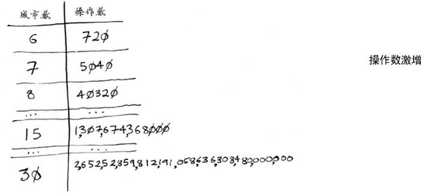
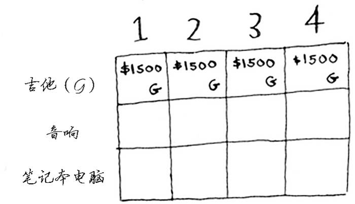
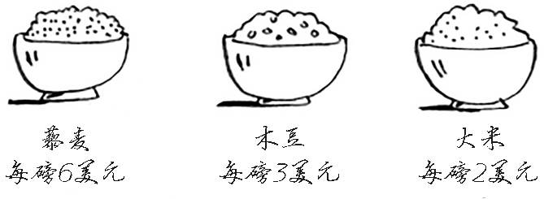

書名：算法圖解
作者：[美] Aditya Bhargava
譯者：袁國忠
ISBN：978-7-115-44763-0
本書由北京圖靈文化發展有限公司發行數字版。版權所有，侵權必究。
您購買的圖靈電子書僅供您個人使用，未經授權，不得以任何方式複製和傳播本書內容。
我們願意相信讀者具有這樣的良知和覺悟，與我們共同保護知識產權。
如果購買者有侵權行為，我們可能對該用戶實施包括但不限於關閉該帳號等維權措施，並可能追究法律責任。
圖靈社區會員 shing（13129792253@qq.com） 專享 尊重版權
Original English language edition, entitled Grokking Algorithms by Aditya Bhargava, published by Manning Publications. 178 South Hill Drive, Westampton, NJ 08060 USA. Copyright © 2016 by Manning Publications.
Simplified Chinese-language edition copyright © 2017 by Posts & Telecom Press. All rights reserved.
本書中文簡體字版由Manning Publications授權人民郵電出版社獨家出版。未經出版者書面許可，不得以任何方式複製或抄襲本書內容。
版權所有，侵權必究。
謹以此書獻給我的父母、Sangeeta和Yogesh
我因為愛好而踏入了編程殿堂。Visual Basic 6 for Dummies 教會了我基礎知識，接著我不斷閱讀，學到的知識也越來越多，但對算法卻始終沒搞明白。至今我還記得購買第一本算法書後的情景：我琢磨著目錄，心想終於要把這些主題搞明白了。但那本書深奧難懂，看了幾周後我就放棄了。直到遇到一位優秀的算法教授後，我才認識到這些概念是多麼地簡單而優雅。
幾年前，我撰寫了第一篇圖解式博文。我是視覺型學習者，對圖解式寫作風格鍾愛有加。從那時候起，我撰寫了多篇介紹函數式編程、Git、機器學習和並發的圖解式博文。順便說一句，剛開始我的寫作水平很一般。詮釋技術概念很難，設計出好的範例需要時間，闡釋難以理解的概念也需要時間，因此很容易對難講的內容一帶而過。我本以為自己已經做得相當好了，直到有一篇博文大受歡迎，有位同事卻跑過來跟我說：「我讀了你的博文，但還是沒搞懂。」看來在寫作方面我要學習的還有很多。
在撰寫這些博文期間，Manning出版社找到我，問我想不想編寫一本圖解式圖書。事實證明，Manning出版社的編輯對如何詮釋技術概念很在行，他們教會了我如何做。我編寫本書的目的就是要把難懂的技術主題說清楚，讓這本算法書易於理解。與撰寫第一篇博文時相比，我的寫作水平有了長足進步，但願你也認為本書內容豐富、易於理解。
感謝Manning出版社給我編寫本書的機會，並給予我極大的創作空間。感謝出版人Marjan Bace，感謝Mike Stephens領我入門，感謝Bert Bates教我如何寫作，感謝Jennifer Stout的快速回覆以及大有幫助的編輯工作。感謝Manning出版社的製作人員，他們是Kevin Sullivan、Mary Piergies、Tiffany Taylor、Leslie Haimes以及其他幕後人員。另外，還要感謝閱讀手稿並提出建議的眾人，他們是Karen Bensdon、Rob Green、Michael Hamrah、Ozren Harlovic、Colin Hastie、Christopher Haupt、Chuck Henderson、Pawel Kozlowski、Amit Lamba、Jean-Francois Morin、Robert Morrison、Sankar Ramanathan、Sander Rossel、Doug Sparling和Damien White。
感謝一路上向我伸出援手的人：Flaskhit遊戲專區的各位教會了我如何編寫程式碼；很多朋友幫助審閱手稿、提出建議並讓我嘗試不同的詮釋方式，其中包括Ben Vinegar、Karl Puzon、Alex Manning、Esther Chan、Anish Bhatt、Michael Glass、Nikrad Mahdi、Charles Lee、Jared Friedman、Hema Manickavasagam、Hari Raja、Murali Gudipati、Srinivas Varadan等；Gerry Brady教會了我算法。還要深深地感謝算法方面的學者，如CLRS1 、高德納和Strang。我真的是站在了巨人的肩上。
1 《算法導論》四位作者的姓氏（Thomas H. Cormen、Charles E. Leiserson、Ronald L. Rivest和Clifford Stein）首字母縮寫。——譯者注
感謝爸爸、媽媽、Priyanka和其他家庭成員，感謝你們一貫的支援。深深感謝妻子Maggie，我們的面前還有很多艱難險阻，有些可不像周五晚上待在家裡修改手稿那麼簡單。
最後，感謝所有試讀本書的讀者，還有在論壇上提供反饋的讀者，你們讓本書的質量更上了一層樓。
本書易於理解，沒有大跨度的思維跳躍，每次引入新概念時，都立即進行詮釋，或者指出將在什麼地方進行詮釋。核心概念都通過練習和反復詮釋進行強化，以便你檢驗假設，跟上步伐。
書中使用範例來幫助理解。我的目標是讓你輕鬆地理解這些概念，而不是讓正文充斥各種符號。我還認為，如果能夠回憶起熟悉的情形，學習效果將達到最佳，而範例有助於喚醒記憶。因此，如果你要記住陣列和鏈結串列（第2章）之間的差別，只要想想在電影院找座位就坐的情形。另外，不怕你說我囉嗦，我是視覺型學習者，因此本書包含大量的圖示。
本書內容是精挑細選的。沒必要在一本書中介紹所有的排序算法，不然還要維基百科和可汗學院做什麼。書中介紹的所有算法都非常實用，對我從事的軟體工程師的工作大有幫助，還可為閱讀更複雜的主題打下堅實的基礎。祝你閱讀愉快！
本書前三章將幫助你打好基礎。
第1章：你將學習第一種實用算法——二分搜尋；還將學習使用大O表示法分析算法的速度。本書從始至終都將使用大O表示法來分析算法的速度。
第2章：你將學習兩種基本的資料結構——陣列和鏈結串列。這兩種資料結構貫穿本書，它們還被用來建立更高級的資料結構，如第5章介紹的雜湊表。
第3章：你將學習遞歸，一種被眾多算法（如第4章介紹的快速排序）採用的實用技巧。
根據我的經驗，大O表示法和遞歸對初學者來說頗具挑戰性，因此介紹這些內容時我放慢了腳步，花費的篇幅也較長。
餘下的篇幅將介紹應用廣泛的算法。
問題解決技巧：將在第4、8和9章介紹。遇到問題時，如果不確定該如何高效地解決，可嘗試分而治之（第4章）或動態規劃（第9章）；如果認識到根本就沒有高效的解決方案，可轉而使用貪婪算法（第8章）來得到近似答案。
雜湊表：將在第5章介紹。雜湊表是一種很有用的資料結構，由鍵值對組成，如人名和電子郵件地址或者用戶名和密碼。雜湊表的用途之大，再怎麼強調都不過分。每當我需要解決問題時，首先想到的兩種方法是：可以使用雜湊表嗎？可以使用圖來建立模型嗎？
圖算法：將在第6、7章介紹。圖是一種模擬網路的方法，這種網路包括人際關係網、公路網、神經元網路或者任何一組連接。廣度優先搜索（第6章）和狄克斯特拉算法（第7章）計算網路中兩點之間的最短距離，可用來計算兩人之間的分隔度或前往目的地的最短路徑。
K最近鄰算法（KNN）：將在第10章介紹。這是一種簡單的機器學習算法，可用於建立推薦系統、OCR引擎、預測股價或其他值（如「我們認為Adit會給這部電影打4星」）的系統，以及對物件進行分類（如「這個字母是Q」）。
接下來如何做：第11章概述了適合你進一步學習的10種算法。
本書的內容和排列順序都經過了細心編排。如果你對某個主題感興趣，直接跳到那裡閱讀即可；否則就按順序逐章閱讀吧，因為它們都以之前介紹的內容為基礎。
強烈建議你動手執行範例程式碼，這部分的重要性再怎麼強調都不過分。可以原封不動地輸入程式碼，也可從www.manning.com/books/grokking-algorithms 或https://github.com/egonschiele/grokking_algorithms 下載，再執行它們。這樣，你記住的內容將多得多。
另外，建議你完成書中的練習。這些練習都很短，通常只需一兩分鐘就能完成，但有些可能需要5~10分鐘。這些練習有助於檢查你的思路，以免偏離正道太遠。
本書適合任何具備編程基礎並想理解算法的人閱讀。你可能面臨一個編程問題，需要找一種算法來實現解決方案，抑或你想知道哪些算法比較有用。下面列出了可能從本書獲得很多幫助的部分讀者。
業餘程式員
編程培訓班學員
需要重溫算法的計算機專業畢業生
對編程感興趣的物理或數學等專業畢業生
本書所有的範例程式碼都是使用Python 2.7編寫的。書中在列出程式碼時使用了等寬字體。有些程式碼還進行了標注，旨在突出重要的概念。
本書的範例程式碼可從出版社網站下載，也可從https://github.com/egonschiele/grokking_algorithms 下載。
我認為，如果能享受學習過程，就能獲得最好的學習效果。請盡情地享受學習過程，動手運行範例程式碼吧！
購買英文版的讀者可免費訪問Manning出版社管理的專用網路論壇，並可以評論本書、提出技術性問題以及獲得作者和其他讀者的幫助。若要訪問並訂閱該論壇，可在瀏覽器的地址欄中輸入www.manning.com/books/grokking-algorithms 。這個網頁會告訴你註冊後如何進入論壇、可獲得哪些幫助以及討論時應遵守的規則。
Manning出版社致力於為讀者和作者提供能夠深入交流的場所。然而，作者參與論壇討論純屬自願，沒有任何報酬，因此Manning出版社對其參與討論的程度不做任何承諾。建議你向作者提些有挑戰性的問題，以免他失去參與討論的興趣！只要本書還在銷售，你就能通過出版社的網站訪問作者在線論壇以及存檔的討論內容。
本章內容
為閱讀後續內容打下基礎。
編寫第一種搜尋算法——二分搜尋。
學習如何談論算法的運行時間——大O表示法。
了解一種常用的算法設計方法——遞歸。
算法 是一組完成任務的指令。任何程式碼片段都可視為算法，但本書只介紹比較有趣的部分。本書介紹的算法要麼速度快，要麼能解決有趣的問題，要麼兼而有之。下面是書中一些重要內容。
第1章討論二分搜尋，並演示算法如何能夠提高程式碼的速度。在一個範例中，算法將需要執行的步驟從40億個減少到了32個！
GPS設備使用圖算法來計算前往目的地的最短路徑，這將在第6、7和8章介紹。
你可使用動態規劃來編寫下國際跳棋的AI算法，這將在第9章討論。
對於每種算法，本書都將首先進行描述並提供範例，再使用大O表示法討論其運行時間，最後探索它可以解決的其他問題。
好消息是，本書介紹的每種算法都很可能有使用你喜歡的語言編寫的實現，因此你無需自己動手編寫每種算法的程式碼！但如果你不明白其優缺點，這些實現將毫無用處。在本書中，你將學習比較不同算法的優缺點：該使用合併排序算法還是快速排序算法，或者該使用陣列還是鏈結串列。僅僅改用不同的資料結構就可能讓結果大不相同。
你將學習至今都沒有掌握的問題解決技巧，例如：
如果你喜歡開發電子遊戲，可使用圖算法編寫跟蹤用戶的AI系統；
你將學習使用K最近鄰算法編寫推薦系統；
有些問題在有限的時間內是不可解的！書中討論NP完全問題的部分將告訴你，如何識別這樣的問題以及如何設計找到近似答案的算法。
總而言之，讀完本書後，你將熟悉一些使用最為廣泛的算法。利用這些新學到的知識，你可學習更具體的AI算法、資料庫算法等，還可在工作中迎接更嚴峻的挑戰。
需要具備的知識
要閱讀本書，需要具備基本的代數知識。具體地說，給定函數f (x ) = x × 2，f (5)的值是多少呢？如果你的答案為10，那就夠了。
另外，如果你熟悉一門編程語言，本章（以及本書）將更容易理解。本書的範例都是使用Python編寫的。如果你不懂任何編程語言但想學習一門，請選擇Python，它非常適合初學者；如果你熟悉其他語言，如Ruby，對閱讀本書也大有幫助。
假設要在電話簿中找一個名字以K打頭的人，（現在誰還用電話簿！）可以從頭開始翻頁，直到進入以K打頭的部分。但你很可能不這樣做，而是從中間開始，因為你知道以K打頭的名字在電話簿中間。
又假設要在字典中找一個以O打頭的單詞，你也將從中間附近開始。
現在假設你登錄Facebook。當你這樣做時，Facebook必須核實你是否有其網站的賬戶，因此必須在其資料庫中搜尋你的用戶名。如果你的用戶名為karlmageddon，Facebook可從以A打頭的部分開始搜尋，但更合乎邏輯的做法是從中間開始搜尋。
這是一個搜尋問題，在前述所有情況下，都可使用同一種算法來解決問題，這種算法就是二分搜尋 。
二分搜尋是一種算法，其輸入是一個有序的元素列表（必須有序的原因稍後解釋）。如果要搜尋的元素包含在列表中，二分搜尋返回其位置；否則返回null
。
下圖是一個例子。
下面的範例說明了二分搜尋的工作原理。我隨便想一個1一100的數字。

你的目標是以最少的次數猜到這個數字。你每次猜測後，我會說小了、大了或對了。
假設你從1開始依次往上猜，猜測過程會是這樣。

這是簡單搜尋 ，更準確的說法是傻找 。每次猜測都只能排除一個數字。如果我想的數字是99，你得猜99次才能猜到！
下面是一種更佳的猜法。從50開始。

小了，但排除了一半 的數字！至此，你知道1一50都小了。接下來，你猜75。
大了，那餘下的數字又排除了一半！使用二分搜尋時，你猜測的是中間的數字，從而每次都將餘下的數字排除一半。接下來，你猜63（50和75中間的數字）。
這就是二分搜尋，你學習了第一種算法！每次猜測排除的數字個數如下。
不管我心裡想的是哪個數字，你在7次之內都能猜到，因為每次猜測都將排除很多數字！
假設你要在字典中搜尋一個單詞，而該字典包含240 000個單詞，你認為每種搜尋最多需要多少步？

如果要搜尋的單詞位於字典末尾，使用簡單搜尋將需要240 000步。使用二分搜尋時，每次排除一半單詞，直到最後只剩下一個單詞。

因此，使用二分搜尋只需18步——少多了！一般而言，對於包含n 個元素的列表，用二分搜尋最多需要log2 n 步，而簡單搜尋最多需要n 步。
對數
你可能不記得什麼是對數了，但很可能記得什麼是冪。log10 100相當於問「將多少個10相乘的結果為100」。答案是兩個：10 × 10 = 100。因此，log10 100 = 2。對數運算是冪運算的逆運算。
對數是冪運算的逆運算
本書使用大O表示法（稍後介紹）討論運行時間時，log指的都是log2 。使用簡單搜尋法搜尋元素時，在最糟情況下需要查看每個元素。因此，如果列表包含8個數字，你最多需要檢查8個數字。而使用二分搜尋時，最多需要檢查log n 個元素。如果列表包含8個元素，你最多需要檢查3個元素，因為log 8 = 3（23 = 8）。如果列表包含1024個元素，你最多需要檢查10個元素，因為log 1024 = 10（210 =1024）。
說明
本書經常會談到log時間，因此你必須明白對數的概念。如果你不明白，可汗學院（khanacademy.org）有一個不錯的視頻，把這個概念講得很清楚。
說明
僅當列表是有序的時候，二分搜尋才管用。例如，電話簿中的名字是按字母順序排列的，因此可以使用二分搜尋來搜尋名字。如果名字不是按順序排列的，結果將如何呢？
下面來看看如何編寫執行二分搜尋的Python程式碼。這裡的程式碼範例使用了陣列。如果你不熟悉陣列，也不用擔心，下一章就會介紹。你只需知道，可將一系列元素儲存在一系列相鄰的桶（bucket），即陣列中。這些桶從0開始編號：第一個桶的位置為#0，第二個桶為#1，第三個桶為#2，以此類推。
函數binary_search
接受一個有序陣列和一個元素。如果指定的元素包含在陣列中，這個函數將返回其位置。你將跟蹤要在其中搜尋的陣列部分——開始時為整個陣列。
low = 0
high = len(list) - 1

你每次都檢查中間的元素。
mid = (low + high) / 2 ←---如果(low + high)不是偶數，Python自動將mid向下取整。
guess = list[mid]
如果猜的數字小了，就相應地修改low
。
if guess < item:
low = mid + 1

如果猜的數字大了，就修改high
。完整的程式碼如下。
def binary_search(list, item):
low = 0 （以下2行）low和high用於跟蹤要在其中搜尋的列表部分
high = len(list)—1
while low <= high: ←-------------只要範圍沒有縮小到只包含一個元素，
mid = (low + high) / 2 ←-------------就檢查中間的元素
guess = list[mid]
if guess == item: ←-------------找到了元素
return mid
if guess > item: ←-------------猜的數字大了
high = mid - 1
else: ←---------------------------猜的數字小了
low = mid + 1
return None ←--------------------沒有指定的元素
my_list = [1, 3, 5, 7, 9] ←------------來測試一下！
print binary_search(my_list, 3) # => 1 ←--------------------別忘了索引從0開始，第二個位置的索引為1
print binary_search(my_list, -1) # => None ←--------------------在Python中，None表示空，它意味著沒有找到指定的元素
練習
1.1 假設有一個包含128個名字的有序列表，你要使用二分搜尋在其中搜尋一個名字，請 問最多需要幾步才能找到？
1.2 上面列表的長度翻倍後，最多需要幾步？
每次介紹算法時，我都將討論其運行時間。一般而言，應選擇效率最高的算法，以最大限度地減少運行時間或占用空間。
回到前面的二分搜尋。使用它可節省多少時間呢？簡單搜尋逐個地檢查數字，如果列表包含100個數字，最多需要猜100次。如果列表包含40億個數字，最多需要猜40億次。換言之，最多需要猜測的次數與列表長度相同，這被稱為線性時間 （linear time）。
二分搜尋則不同。如果列表包含100個元素，最多要猜7次；如果列表包含40億個數字，最多需猜32次。厲害吧？二分搜尋的運行時間為對數時間 （或log時間）。下表總結了我們發現的情況。

大O表示法 是一種特殊的表示法，指出了算法的速度有多快。誰在乎呢？實際上，你經常要使用別人編寫的算法，在這種情況下，知道這些算法的速度大有裨益。本節將介紹大O表示法是什麼，並使用它列出一些最常見的算法運行時間。
Bob要為NASA編寫一個搜尋算法，這個算法在火箭即將登入月球前開始執行，幫助計算著陸地點。

這個範例表明，兩種算法的運行時間呈現不同的增速。Bob需要做出決定，是使用簡單搜尋還是二分搜尋。使用的算法必須快速而準確。一方面，二分搜尋的速度更快。Bob必須在10秒鐘內找出著陸地點，否則火箭將偏離方向。另一方面，簡單搜尋算法編寫起來更容易，因此出現bug的可能性更小。Bob可不希望引導火箭著陸的程式碼中有bug！為確保萬無一失，Bob決定計算兩種算法在列表包含100個元素的情況下需要的時間。
假設檢查一個元素需要1毫秒。使用簡單搜尋時，Bob必須檢查100個元素，因此需要100毫秒才能搜尋完畢。而使用二分搜尋時，只需檢查7個元素（log2 100大約為7），因此需要7毫秒就能搜尋完畢。然而，實際要搜尋的列表可能包含10億個元素，在這種情況下，簡單搜尋需要多長時間呢？二分搜尋又需要多長時間呢？請務必找出這兩個問題的答案，再接著往下讀。

Bob使用包含10億個元素的列表運行二分搜尋，運行時間為30毫秒（log2 1 000 000 000大約為30）。他心裡想，二分搜尋的速度大約為簡單搜尋的15倍，因為列表包含100個元素時，簡單搜尋需要100毫秒，而二分搜尋需要7毫秒。因此，列表包含10億個元素時，簡單搜尋需要30 × 15 = 450毫秒，完全符合在10秒內搜尋完畢的要求。Bob決定使用簡單搜尋。這是正確的選擇嗎？
不是。實際上，Bob錯了，而且錯得離譜。列表包含10億個元素時，簡單搜尋需要10億毫秒，相當於11天！為什麼會這樣呢？因為二分搜尋和簡單搜尋的運行時間的增速不同。
也就是說，隨著元素數量的增加，二分搜尋需要的額外時間並不多，而簡單搜尋需要的額外時間卻很多。因此，隨著列表的增長，二分搜尋的速度比簡單搜尋快得多。Bob以為二分搜尋速度為簡單搜尋的15倍，這不對：列表包含10億個元素時，為3300萬倍。有鑒於此，僅知道算法需要多長時間才能運行完畢還不夠，還需知道運行時間如何隨列表增長而增加。這正是大O表示法的用武之地。

大O表示法指出了算法有多快。例如，假設列表包含n 個元素。簡單搜尋需要檢查每個元素，因此需要執行n 次操作。使用大O表示法，這個運行時間為O (n )。單位秒呢？沒有——大O表示法指的並非以秒為單位的速度。大O表示法讓你能夠比較操作數，它指出了算法運行時間的增速 。
再來看一個例子。為檢查長度為n 的列表，二分搜尋需要執行log n 次操作。使用大O表示法，這個運行時間怎麼表示呢？O (log n )。一般而言，大O表示法像下面這樣。
這指出了算法需要執行的操作數。之所以稱為大O表示法，是因為操作數前有個大O。這聽起來像笑話，但事實如此！
下面來看一些例子，看看你能否確定這些算法的運行時間。
下面的範例，你在家裡使用紙和筆就能完成。假設你要畫一個網格，它包含16個格子。

算法1
一種方法是以每次畫一個的方式畫16個格子。記住，大O表示法計算的是操作數。在這個範例中，畫一個格子是一次操作，需要畫16個格子。如果每次畫一個格子，需要執行多少次操作呢？
畫16個格子需要16步。這種算法的運行時間是多少？
算法2
請嘗試這種算法——將紙折起來。
在這個範例中，將紙對折一次就是一次操作。第一次對折相當於畫了兩個格子！
再折，再折，再折。

折4次後再開啟，便得到了漂亮的網格！每折一次，格子數就翻倍，折4次就能得到16個格子！
你每折一次，繪製出的格子數都翻倍，因此4步就能「繪製」出16個格子。這種算法的運行時間是多少呢？請搞清楚這兩種算法的運行時間之後，再接著往下讀。
答案如下：算法1的運行時間為O (n )，算法2的運行時間為O (log n )。
假設你使用簡單搜尋在電話簿中找人。你知道，簡單搜尋的運行時間為O (n )，這意味著在最糟情況下，必須查看電話簿中的每個條目。如果要搜尋的是Adit——電話簿中的第一個人，一次就能找到，無需查看每個條目。考慮到一次就找到了Adit，請問這種算法的運行時間是O (n )還是O (1)呢？
簡單搜尋的運行時間總是為O (n )。搜尋Adit時，一次就找到了，這是最佳的情形，但大O表示法說的是最糟的情形。因此，你可以說，在最糟情況下，必須查看電話簿中的每個條目，對應的運行時間為O (n )。這是一個保證——你知道簡單搜尋的運行時間不可能超過O (n )。
說明
除最糟情況下的運行時間外，還應考慮平均情況的運行時間，這很重要。最糟情況和平均情況將在第4章討論。
下面按從快到慢的順序列出了你經常會遇到的5種大O運行時間。
O (log n )，也叫對數時間 ，這樣的算法包括二分搜尋。
O (n )，也叫線性時間 ，這樣的算法包括簡單搜尋。
O (n * log n )，這樣的算法包括第4章將介紹的快速排序——一種速度較快的排序算法。
O (n 2 )，這樣的算法包括第2章將介紹的選擇排序——一種速度較慢的排序算法。
O (n !)，這樣的算法包括接下來將介紹的旅行商問題的解決方案——一種非常慢的算法。
假設你要繪製一個包含16格的網格，且有5種不同的算法可供選擇，這些算法的運行時間如上所示。如果你選擇第一種算法，繪製該網格所需的操作數將為4（log 16 = 4）。假設你每秒可執行10次操作，那麼繪製該網格需要0.4秒。如果要繪製一個包含1024格的網格呢？這需要執行10（log 1024 = 10）次操作，換言之，繪製這樣的網格需要1秒。這是使用第一種算法的情況。
第二種算法更慢，其運行時間為O (n )。即要繪製16個格子，需要執行16次操作；要繪製1024個格子，需要執行1024次操作。執行這些操作需要多少秒呢？
下面按從快到慢的順序列出了使用這些算法繪製網格所需的時間：
還有其他的運行時間，但這5種是最常見的。
這裡做了簡化，實際上，並不能如此乾淨利索地將大O運行時間轉換為操作數，但就目前而言，這種準確度足夠了。等你學習其他一些算法後，第4章將回過頭來再次討論大O表示法。當前，我們獲得的主要啟示如下。
算法的速度指的並非時間，而是操作數的增速。
談論算法的速度時，我們說的是隨著輸入的增加，其運行時間將以什麼樣的速度增加。
算法的運行時間用大O表示法表示。
O (log n )比O (n )快，當需要搜索的元素越多時，前者比後者快得越多。
練習
使用大O表示法給出下述各種情形的運行時間。
1.3 在電話簿中根據名字搜尋電話號碼。
1.4 在電話簿中根據電話號碼找人。（提示：你必須搜尋整個電話簿。）
1.5 閱讀電話簿中每個人的電話號碼。
1.6 閱讀電話簿中姓名以A打頭的人的電話號碼。這個問題比較棘手，它涉及第4章的概 念。答案可能讓你感到驚訝！
閱讀前一節時，你可能認為根本就沒有運行時間為O (n !)的算法。讓我來證明你錯了！下面就是一個運行時間極長的算法。這個算法要解決的是計算機科學領域非常著名的旅行商問題，其計算時間增加得非常快，而有些非常聰明的人都認為沒有改進空間。

有一位旅行商。
他需要前往5個城市。

這位旅行商（姑且稱之為Opus吧）要前往這5個城市，同時要確保旅程最短。為此，可考慮前往這些城市的各種可能順序。
對於每種順序，他都計算總旅程，再挑選出旅程最短的路線。5個城市有120種不同的排列方式。因此，在涉及5個城市時，解決這個問題需要執行120次操作。涉及6個城市時，需要執行720次操作（有720種不同的排列方式）。涉及7個城市時，需要執行5040次操作！

推而廣之，涉及n 個城市時，需要執行n !（n 的階乘）次操作才能計算出結果。因此運行時間為O (n !)，即階乘時間。除非涉及的城市數很少，否則需要執行非常多的操作。如果涉及的城市數超過100，根本就不能在合理的時間內計算出結果——等你計算出結果，太陽都沒了。
這種算法很糟糕！Opus應使用別的算法，可他別無選擇。這是計算機科學領域待解的問題之一。對於這個問題，目前還沒有找到更快的算法，有些很聰明的人認為這個問題根本就沒有更巧妙的算法。面對這個問題，我們能做的只是去找出近似答案，更詳細的訊息請參閱第10章。
最後需要指出的一點是，高水平的讀者可研究一下二元樹，這在最後一章做了簡要的介紹。
二分搜尋的速度比簡單搜尋快得多。
O (log n )比O (n )快。需要搜索的元素越多，前者比後者就快得越多。
算法運行時間並不以秒為單位。
算法運行時間是從其增速的角度度量的。
算法運行時間用大O表示法表示。
本章內容
學習兩種最基本的資料結構——陣列和鏈結串列，它們無處不在。第1章使用了陣列，其他各章幾乎也都將用到陣列。陣列是個重要的主題，一定要高度重視！但在有些情況下，使用鏈結串列比使用陣列更合適。本章闡述陣列和鏈結串列的優缺點，讓你能夠根據要實現的算法選擇合適的一個。
學習第一種排序算法。很多算法僅在資料經過排序後才管用。還記得二分搜尋嗎？它只能用於有序元素列表。本章將介紹選擇排序。很多語言都內置了排序算法，因此你基本上不用從頭開始編寫自己的版本。但選擇排序是下一章將介紹的快速排序的基石。快速排序是一種重要的算法，如果你熟悉其他排序算法，理解起來將更容易。
需要具備的知識
要明白本章的性能分析部分，必須知道大O表示法和對數。如果你不懂，建議回過頭去閱讀第1章。本書餘下的篇幅都會用到大O表示法。
假設你去看演出，需要將東西寄存。寄存處有一個櫃子，櫃子有很多抽屜。

每個抽屜可放一樣東西，你有兩樣東西要寄存，因此要了兩個抽屜。
你將兩樣東西存放在這裡。

現在你可以去看演出了！這大致就是計算機記憶體的工作原理。計算機就像是很多抽屜的集合體，每個抽屜都有地址。
fe0ffeeb是一個記憶體單元的地址。
需要將資料儲存到記憶體時，你請求計算機提供儲存空間，計算機給你一個儲存地址。需要儲存多項資料時，有兩種基本方式——陣列和鏈結串列。但它們並非都適用於所有的情形，因此知道它們的差別很重要。接下來介紹陣列和鏈結串列以及它們的優缺點。
有時候，需要在記憶體中儲存一系列元素。假設你要編寫一個管理待辦事項的應用程式，為此需要將這些待辦事項儲存在記憶體中。

應使用陣列還是鏈結串列呢？鑒於陣列更容易掌握，我們先將待辦事項儲存在陣列中。使用陣列意味著所有待辦事項在記憶體中都是相連的（緊靠在一起的）。
現在假設你要添加第四個待辦事項，但後面的那個抽屜放著別人的東西！

這就像你與朋友去看電影，找到地方就坐後又來了一位朋友，但原來坐的地方沒有空位置，只得再找一個可坐下所有人的地方。在這種情況下，你需要請求計算機重新分配一塊可容納4個待辦事項的記憶體，再將所有待辦事項都移到那裡。
如果又來了一位朋友，而當前坐的地方也沒有空位，你們就得再次轉移！真是太麻煩了。同樣，在陣列中添加新元素也可能很麻煩。如果沒有了空間，就得移到記憶體的其他地方，因此添加新元素的速度會很慢。一種解決之道是「預留座位」：即便當前只有3個待辦事項，也請計算機提供10個位置，以防需要添加待辦事項。這樣，只要待辦事項不超過10個，就無需轉移。這是一個不錯的權變措施，但你應該明白，它存在如下兩個缺點。
你額外請求的位置可能根本用不上，這將浪費記憶體。你沒有使用，別人也用不了。
待辦事項超過10個後，你還得轉移。
因此，這種權宜措施雖然不錯，但絕非完美的解決方案。對於這種問題，可使用鏈結串列來解決。
鏈結串列中的元素可儲存在記憶體的任何地方。

鏈結串列的每個元素都儲存了下一個元素的地址，從而使一系列隨機的記憶體地址串在一起。

這猶如尋寶遊戲。你前往第一個地址，那裡有一張紙條寫著「下一個元素的地址為123」。因此，你前往地址123，那裡又有一張紙條，寫著「下一個元素的地址為847」，以此類推。在鏈結串列中添加元素很容易：只需將其放入記憶體，並將其地址儲存到前一個元素中。
使用鏈結串列時，根本就不需要移動元素。這還可避免另一個問題。假設你與五位朋友去看一部很火的電影。你們六人想坐在一起，但看電影的人較多，沒有六個在一起的座位。使用陣列時有時就會遇到這樣的情況。假設你要為陣列分配10 000個位置，記憶體中有10 000個位置，但不都靠在一起。在這種情況下，你將無法為該陣列分配記憶體！鏈結串列相當於說「我們分開來坐」，因此，只要有足夠的記憶體空間，就能為鏈結串列分配記憶體。
鏈結串列的優勢在插入元素方面，那陣列的優勢又是什麼呢？
排行榜網站使用卑鄙的手段來增加頁面瀏覽量。它們不在一個頁面中顯示整個排行榜，而將排行榜的每項內容都放在一個頁面中，並讓你單擊Next來查看下一項內容。例如，顯示十大電視反派時，不在一個頁面中顯示整個排行榜，而是先顯示第十大反派（Newman）。你必須在每個頁面中單擊Next，才能看到第一大反派（Gustavo Fring）。這讓網站能夠在10個頁面中顯示廣告，但用戶需要單擊Next 九次才能看到第一個，真的是很煩。如果整個排行榜都顯示在一個頁面中，將方便得多。這樣，用戶可單擊排行榜中的人名來獲得更詳細的訊息。

鏈結串列存在類似的問題。在需要讀取鏈結串列的最後一個元素時，你不能直接讀取，因為你不知道它所處的地址，必須先訪問元素#1，從中獲取元素#2的地址，再訪問元素#2並從中獲取元素#3的地址，以此類推，直到訪問最後一個元素。需要同時讀取所有元素時，鏈結串列的效率很高：你讀取第一個元素，根據其中的地址再讀取第二個元素，以此類推。但如果你需要跳躍，鏈結串列的效率真的很低。
陣列與此不同：你知道其中每個元素的地址。例如，假設有一個陣列，它包含五個元素，起始地址為00，那麼元素#5的地址是多少呢？

只需執行簡單的數學運算就知道：04。需要隨機地讀取元素時，陣列的效率很高，因為可迅速找到陣列的任何元素。在鏈結串列中，元素並非靠在一起的，你無法迅速計算出第五個元素的記憶體地址，而必須先訪問第一個元素以獲取第二個元素的地址，再訪問第二個元素以獲取第三個元素的地址，以此類推，直到訪問第五個元素。
陣列的元素帶編號，編號從0而不是1開始。例如，在下面的陣列中，元素20的位置為1。

而元素10的位置為0。這通常會讓新手暈頭轉向。從0開始讓基於陣列的程式碼編寫起來更容易，因此程式員始終堅持這樣做。幾乎所有的編程語言都從0開始對陣列元素進行編號。你很快就會習慣這種做法。
元素的位置稱為索引 。因此，不說「元素20的位置為1」，而說「元素20位於索引1處」。本書將使用索引來表示位置。
下面列出了常見的陣列和鏈結串列操作的運行時間。

問題：在陣列中插入元素時，為何運行時間為O (n )呢？假設要在陣列開頭插入一個元素，你將如何做？這需要多長時間？請閱讀下一節，找出這些問題的答案！
練習
2.1 假設你要編寫一個記賬的應用程式。
你每天都將所有的支出記錄下來，並在月底統計支出，算算當月花了多少錢。因此，你執行的插入操作很多，但讀取操作很少。該使用陣列還是鏈結串列呢？
假設你要讓待辦事項按日期排列。之前，你在清單末尾添加了待辦事項。
但現在你要根據新增待辦事項的日期將其插入到正確的位置。
需要在中間插入元素時，陣列和鏈結串列哪個更好呢？使用鏈結串列時，插入元素很簡單，只需修改它前面的那個元素指向的地址。

而使用陣列時，則必須將後面的元素都向後移。
如果沒有足夠的空間，可能還得將整個陣列複製到其他地方！因此，當需要在中間插入元素時，鏈結串列是更好的選擇。
如果你要刪除元素呢？鏈結串列也是更好的選擇，因為只需修改前一個元素指向的地址即可。而使用陣列時，刪除元素後，必須將後面的元素都向前移。
不同於插入，刪除元素總能成功。如果記憶體中沒有足夠的空間，插入操作可能失敗，但在任何情況下都能夠將元素刪除。
下面是常見陣列和鏈結串列操作的運行時間。
需要指出的是，僅當能夠立即訪問要刪除的元素時，刪除操作的運行時間才為O (1)。通常我們都記錄了鏈結串列的第一個元素和最後一個元素，因此刪除這些元素時運行時間為O (1)。
陣列和鏈結串列哪個用得更多呢？顯然要看情況。但陣列用得很多，因為它支援隨機訪問。有兩種訪問方式：隨機訪問 和順序訪問 。順序訪問意味著從第一個元素開始逐個地讀取元素。鏈結串列只能順序訪問：要讀取鏈結串列的第十個元素，得先讀取前九個元素，並沿鏈接找到第十個元素。隨機訪問意味著可直接跳到第十個元素。本書經常說陣列的讀取速度更快，這是因為它們支援隨機訪問。很多情況都要求能夠隨機訪問，因此陣列用得很多。陣列和鏈結串列還被用來實現其他資料結構，這將在本書後面介紹。
練習
2.2 假設你要為飯店建立一個接受顧客點選單的應用程式。這個應用程式儲存一系列點選單。服務員添加點選單，而廚師取出點選單並製作菜肴。這是一個點選單佇列：服務員在隊尾添加點選單，廚師取出佇列開頭的點選單並製作菜肴。

你使用陣列還是鏈結串列來實現這個佇列呢？（提示：鏈結串列擅長插入和刪除，而陣列擅長隨機訪問。在這個應用程式中，你要執行的是哪些操作呢？）
2.3 我們來做一個思考實驗。假設Facebook記錄一系列用戶名，每當有用戶試圖登錄Facebook時，都搜尋其用戶名，如果找到就允許用戶登錄。由於經常有用戶登錄Facebook，因此需要執行大量的用戶名搜尋操作。假設Facebook使用二分搜尋算法，而這種算法要求能夠隨機訪問——立即獲取中間的用戶名。考慮到這一點，應使用陣列還是鏈結串列來儲存用戶名呢？
2.4 經常有用戶在Facebook註冊。假設你已決定使用陣列來儲存用戶名，在插入方面陣列有何缺點呢？具體地說，在陣列中添加新用戶將出現什麼情況？
2.5 實際上，Facebook儲存用戶訊息時使用的既不是陣列也不是鏈結串列。假設Facebook使用的是一種混合資料：鏈結串列陣列。這個陣列包含26個元素，每個元素都指向一個鏈結串列。例如，該陣列的第一個元素指向的鏈結串列包含所有以A打頭的用戶名，第二個元素指向的鏈結串列包含所有以B打頭的用戶名，以此類推。

假設Adit B在Facebook註冊，而你需要將其加入前述資料結構中。因此，你訪問陣列的第一個元素，再訪問該元素指向的鏈結串列，並將Adit B添加到這個鏈結串列末尾。現在假設你要搜尋Zakhir H。因此你訪問第26個元素，再在它指向的鏈結串列（該鏈結串列包含所有以z打頭的用戶名）中搜尋Zakhir H。
請問，相比於陣列和鏈結串列，這種混合資料結構的搜尋和插入速度更慢還是更快？你不必給出大O運行時間，只需指出這種新資料結構的搜尋和插入速度更快還是更慢。
有了前面的知識，你就可以學習第二種算法——選擇排序了。要理解本節的內容，你必須熟悉陣列、鏈結串列和大O表示法。

假設你的計算機儲存了很多樂曲。對於每個樂隊，你都記錄了其作品被播放的次數。

你要將這個列表按播放次數從多到少的順序排列，從而將你喜歡的樂隊排序。該如何做呢？
一種辦法是遍歷這個列表，找出作品播放次數最多的樂隊，並將該樂隊添加到一個新列表中。
再次這樣做，找出播放次數第二多的樂隊。

繼續這樣做，你將得到一個有序列表。

下面從計算機科學的角度出發，看看這需要多長時間。別忘了，O (n )時間意味著查看列表中的每個元素一次。例如，對樂佇列表進行簡單搜尋時，意味著每個樂隊都要查看一次。

要找出播放次數最多的樂隊，必須檢查列表中的每個元素。正如你剛才看到的，這需要的時間為O (n )。因此對於這種時間為O (n )的操作，你需要執行n 次。
需要的總時間為 O (n × n )，即O (n 2 )。
排序算法很有用。你現在可以對如下內容進行排序：
電話簿中的人名
旅行日期
電子郵件（從新到舊）
需要檢查的元素數越來越少
隨著排序的進行，每次需要檢查的元素數在逐漸減少，最後一次需要檢查的元素都只有一個。既然如此，運行時間怎麼還是O (n 2 )呢？這個問題問得好，這與大O表示法中的常數相關。第4章將詳細解釋，這裡只簡單地說一說。
你說得沒錯，並非每次都需要檢查n 個元素。第一次需要檢查n 個元素，但隨後檢查的元素數依次為n - 1, n – 2, …, 2和1。平均每次檢查的元素數為1/2 × n ，因此運行時間為O (n × 1/2 × n )。但大O表示法省略諸如1/2這樣的常數（有關這方面的完整討論，請參閱第4章），因此簡單地寫作O (n × n )或O (n 2 )。
選擇排序是一種靈巧的算法，但其速度不是很快。快速排序是一種更快的排序算法，其運行時間為O (n log n )，這將在下一章介紹。
前面沒有列出對樂隊進行排序的程式碼，但下述程式碼提供了類似的功能：將陣列元素按從小到大的順序排列。先編寫一個用於找出陣列中最小元素的函數。
def findSmallest(arr):
smallest = arr[0] ←------儲存最小的值
smallest_index = 0 ←------儲存最小元素的索引
for i in range(1, len(arr)):
if arr[i] < smallest:
smallest = arr[i]
smallest_index = i
return smallest_index
現在可以使用這個函數來編寫選擇排序算法了。
def selectionSort(arr): ←------對陣列進行排序
newArr = []
for i in range(len(arr)):
smallest = findSmallest(arr) ←------找出陣列中最小的元素，並將其加入到新陣列中
newArr.append(arr.pop(smallest))
return newArr
print selectionSort([5, 3, 6, 2, 10])

計算機記憶體猶如一大堆抽屜。
需要儲存多個元素時，可使用陣列或鏈結串列。
陣列的元素都在一起。
鏈結串列的元素是分開的，其中每個元素都儲存了下一個元素的地址。
陣列的讀取速度很快。
鏈結串列的插入和刪除速度很快。
在同一個陣列中，所有元素的類型都必須相同（都為int、double等）。
本章內容
學習遞歸。遞歸是很多算法都使用的一種編程方法，是理解本書後續內容的關鍵。
學習如何將問題分成基線條件和遞歸條件。第4章將介紹的分而治之策略使用這種簡單的概念來解決棘手的問題。
我懷著激動的心情編寫本章，因為它介紹的是遞歸 ——一種優雅的問題解決方法。遞歸是我最喜歡的主題之一，它將人分成三個截然不同的陣營：恨它的、愛它的以及恨了幾年後又愛上它的。我本人屬於第三個陣營。為幫助你理解，現有以下建議。
本章包含很多範例程式碼，請運行它們，以便搞清楚其中的工作原理。
請用紙和筆逐步執行至少一個遞歸函數，就像這樣：我使用5來呼叫factorial
，這將使用4呼叫factorial
，並將返回結果乘以5，以此類推。這樣逐步執行遞歸函數可搞明白遞歸函數的工作原理。
本章還包含大量偽程式碼。偽程式碼 是對手頭問題的簡要描述，看著像程式碼，但其實更接近自然語言。
假設你在祖母的閣樓中翻箱倒櫃，發現了一個上鎖的神秘手提箱。
祖母告訴你，鑰匙很可能在下面這個盒子裏。

這個盒子裏有盒子，而盒子裏的盒子又有盒子。鑰匙就在某個盒子中。為找到鑰匙，你將使用什麼算法？先想想這個問題，再接著往下看。
下面是一種方法。
(1) 建立一個要搜尋的盒子堆。
(2) 從盒子堆取出一個盒子，在裡面找。
(3) 如果找到的是盒子，就將其加入盒子堆中，以便以後再搜尋。
(4) 如果找到鑰匙，則大功告成！
(5) 回到第二步。
下面是另一種方法。
(1) 檢查盒子中的每樣東西。
(2) 如果是盒子，就回到第一步。
(3) 如果是鑰匙，就大功告成！
在你看來，哪種方法更容易呢？第一種方法使用的是while
循環：只要盒子堆不空，就從中取一個盒子，並在其中仔細搜尋。
def look_for_key(main_box):
pile = main_box.make_a_pile_to_look_through()
while pile is not empty:
box = pile.grab_a_box()
for item in box:
if item.is_a_box():
pile.append(item)
elif item.is_a_key():
print "found the key!"
第二種方法使用遞歸——函數呼叫自己，這種方法的偽程式碼如下。
def look_for_key(box):
for item in box:
if item.is_a_box():
look_for_key(item) ←------遞歸！
elif item.is_a_key():
print "found the key!"
這兩種方法的作用相同，但在我看來，第二種方法更清晰。遞歸只是讓解決方案更清晰，並沒有性能上的優勢。實際上，在有些情況下，使用循環的性能更好。我很喜歡Leigh Caldwell在Stack Overflow上說的一句話：「如果使用循環，程式的性能可能更高；如果使用遞歸，程式可能更容易理解。如何選擇要看什麼對你來說更重要。」1
1 參見http://stackoverflow.com/a/72694/139117 。
很多算法都使用了遞歸，因此理解這種概念很重要。
由於遞歸函數呼叫自己，因此編寫這樣的函數時很容易出錯，進而導致無限循環。例如，假設你要編寫一個像下面這樣倒計時的函數。
> 3...2...1

為此，你可以用遞歸的方式編寫，如下所示。
def countdown(i):
print i
countdown(i-1)
如果你運行上述程式碼，將發現一個問題：這個函數運行起來沒完沒了！

> 3...2...1...0...-1...-2...
（要讓腳本停止運行，可按Ctrl+C。）
編寫遞歸函數時，必須告訴它何時停止遞歸。正因為如此，每個遞歸函數都有兩部分：基線條件 （base case）和遞歸條件 （recursive case）。遞歸條件指的是函數呼叫自己，而基線條件則指的是函數不再呼叫自己，從而避免形成無限循環。
我們來給函數countdown
添加基線條件。
def countdown(i):
print i
if i <= 0: ←------基線條件
return
else: ←------遞歸條件
countdown(i-1)
現在，這個函數將像預期的那樣運行，如下所示。
本節將介紹一個重要的編程概念——呼叫堆疊 （call stack）。呼叫堆疊不僅對編程來說很重要，使用遞歸時也必須理解這個概念。
假設你去野外燒烤，並為此建立了一個待辦事項清單——一疊便條。
本書之前討論陣列和鏈結串列時，也有一個待辦事項清單。你可將待辦事項添加到該清單的任何地方，還可刪除任何一個待辦事項。一疊便條要簡單得多：插入的待辦事項放在清單的最前面；讀取待辦事項時，你只讀取最上面的那個，並將其刪除。因此這個待辦事項清單只有兩種操作：壓入 （插入）和彈出 （刪除並讀取）。

下面來看看如何使用這個待辦事項清單。
這種資料結構稱為堆疊 。堆疊是一種簡單的資料結構，剛才我們一直在使用它，卻沒有意識到！
計算機在內部使用被稱為呼叫堆疊 的堆疊。我們來看看計算機是如何使用呼叫堆疊的。下面是一個簡單的函數。
def greet(name):
print "hello, " + name + "!"
greet2(name)
print "getting ready to say bye..."
bye()
這個函數問候用戶，再呼叫另外兩個函數。這兩個函數的程式碼如下。
def greet2(name):
print "how are you, " + name + "?"
def bye():
print "ok bye!"
下面詳細介紹呼叫函數時發生的情況。
說明
在Python中，
假設你呼叫greet("maggie")
，計算機將首先為該函數呼叫分配一塊記憶體。

我們來使用這些記憶體。變數name
被設定為maggie
，這需要儲存到記憶體中。
每當你呼叫函數時，計算機都像這樣將函數呼叫涉及的所有變數的值儲存到記憶體中。接下來，你列印hello, maggie!
，再呼叫greet2("maggie")
。同樣，計算機也為這個函數呼叫分配一塊記憶體。
計算機使用一個堆疊來表示這些記憶體塊，其中第二個記憶體塊位於第一個記憶體塊上面。你列印how are you, maggie?
，然後從函數呼叫返回。此時，堆疊頂的記憶體塊被彈出。
現在，堆疊頂的記憶體塊是函數greet
的，這意味著你返回到了函數greet
。當你呼叫函數greet2
時，函數greet
只執行了一部分
。這是本節的一個重要概念：呼叫另一個函數時，當前函數暫停並處於未完成狀態
。該函數的所有變數的值都還在記憶體中。執行完函數greet2
後，你回到函數greet
，並從離開的地方開始接著往下執行：首先列印getting ready to say bye…
，再呼叫函數bye
。

在堆疊頂添加了函數bye
的記憶體塊。然後，你列印ok bye!
，並從這個函數返回。

現在你又回到了函數greet
。由於沒有別的事情要做，你就從函數greet
返回。這個堆疊用於儲存多個函數的變數，被稱為呼叫堆疊
。
練習
3.1 根據下面的呼叫堆疊，你可獲得哪些訊息？
下面來看看遞歸函數的呼叫堆疊。
遞歸函數也使用呼叫堆疊！來看看遞歸函數factorial
的呼叫堆疊。factorial(5)
寫作5!，其定義如下：5! = 5 * 4 * 3 * 2 * 1。同理，factorial(3)
為3 * 2 * 1。下面是計算階乘的遞歸函數。
def fact(x):
if x == 1:
return 1
else:
return x * fact(x-1)
下面來詳細分析呼叫fact(3)
時呼叫堆疊是如何變化的。別忘了，堆疊頂的方框指出了當前執行到了什麼地方。
注意，每個fact
呼叫都有自己的x
變數。在一個函數呼叫中不能訪問另一個的x
變數。
堆疊在遞歸中扮演著重要角色。在本章開頭的範例中，有兩種尋找鑰匙的方法。下面再次列出了第一種方法。
使用這種方法時，你建立一個待搜尋的盒子堆，因此你始終知道還有哪些盒子需要搜尋。
但使用遞歸方法時，沒有盒子堆。
既然沒有盒子堆，那算法怎麼知道還有哪些盒子需要搜尋呢？下面是一個例子。
此時，呼叫堆疊類似於下面這樣。
原來「盒子堆」儲存在了堆疊中！這個堆疊包含未完成的函數呼叫，每個函數呼叫都包含還未檢查完的盒子。使用堆疊很方便，因為你無需自己跟蹤盒子堆——堆疊替你這樣做了。
使用堆疊雖然很方便，但是也要付出代價：儲存詳盡的訊息可能占用大量的記憶體。每個函數呼叫都要占用一定的記憶體，如果堆疊很高，就意味著計算機儲存了大量函數呼叫的訊息。在這種情況下，你有兩種選擇。
重新編寫程式碼，轉而使用循環。
使用尾遞歸 。這是一個高級遞歸主題，不在本書的討論範圍內。另外，並非所有的語言都支援尾遞歸。
練習
3.2 假設你編寫了一個遞歸函數，但不小心導致它沒完沒了地運行。正如你看到的，對於每次函數呼叫，計算機都將為其在堆疊中分配記憶體。遞歸函數沒完沒了地運行時，將給堆疊帶來什麼影響？
遞歸指的是呼叫自己的函數。
每個遞歸函數都有兩個條件：基線條件和遞歸條件。
堆疊有兩種操作：壓入和彈出。
所有函數呼叫都進入呼叫堆疊。
呼叫堆疊可能很長，這將占用大量的記憶體。

本章內容
學習分而治之。有時候，你可能會遇到使用任何已知的算法都無法解決的問題。優秀的算法學家遇到這種問題時，不會就此放棄，而是嘗試使用掌握的各種問題解決方法來找出解決方案。分而治之是你學習的第一種通用的問題解決方法。
學習快速排序——一種常用的優雅的排序算法。快速排序使用分而治之的策略。
前一章深入介紹了遞歸，本章的重點是使用學到的新技能來解決問題。我們將探索分而治之 （divide and conquer，D&C）——一種著名的遞歸式問題解決方法。
本書將深入算法的核心。只能解決一種問題的算法畢竟用處有限，而D&C提供了解決問題的思路，是另一個可供你使用的工具。面對新問題時，你不再束手無策，而是自問：「使用分而治之能解決嗎？」
在本章末尾，你將學習第一個重要的D&C算法——快速排序。快速排序是一種排序算法，速度比第2章介紹的選擇排序快得多，實屬優雅程式碼的典範。
D&C並不那麼容易掌握，我將通過三個範例來介紹。首先，介紹一個直觀的範例；然後，介紹一個程式碼範例，它不那麼好看，但可能更容易理解；最後，詳細介紹快速排序——一種使用D&C的排序算法。

假設你是農場主，有一小塊土地。
你要將這塊地均勻地分成方塊，且分出的方塊要盡可能大。顯然，下面的分法都不符合要求。

如何將一塊地均勻地分成方塊，並確保分出的方塊是最大的呢？使用D&C策略！D&C算法是遞歸的。使用D&C解決問題的過程包括兩個步驟。
(1) 找出基線條件，這種條件必須盡可能簡單。
(2) 不斷將問題分解（或者說縮小規模），直到符合基線條件。
下面就來使用D&C找出前述問題的解決方案。可你能使用的最大方塊有多大呢？
首先，找出基線條件。最容易處理的情況是，一條邊的長度是另一條邊的整數倍。

如果一邊長25 m，另一邊長50 m，那麼可使用的最大方塊為 25 m×25 m。換言之，可以將這塊地分成兩個這樣的方塊。
現在需要找出遞歸條件，這正是D&C的用武之地。根據D&C的定義，每次遞歸呼叫都必須縮小問題的規模。如何縮小前述問題的規模呢？我們首先找出這塊地可容納的最大方塊。

你可以從這塊地中划出兩個640 m×640 m的方塊，同時餘下一小塊地。現在是頓悟時刻：何不對餘下的那一小塊地使用相同的算法呢？

最初要劃分的土地尺寸為1680 m×640 m，而現在要劃分的土地更小，為640 m×400 m。適用於這小塊地的最大方塊，也是適用於整塊地的最大方塊 。換言之，你將均勻劃分1680 m×640 m土地的問題，簡化成了均勻劃分640 m×400 m土地的問題！
歐幾里德算法
前面說「適用於這小塊地的最大方塊，也是適用於整塊地的最大方塊」，如果你覺得這一點不好理解，也不用擔心。這確實不好理解，但遺憾的是，要證明這一點，需要的篇幅有點長，在本書中無法這樣做，因此你只能選擇相信這種說法是正確的。如果你想搞明白其中的原因，可參閱歐幾里德算法。可汗學院很清楚地闡述了這種算法，網址為https://www.khanacademy.org/computing/computer-science/ryptography/modarithmetic/a/the-euclidean-algorithm 。
下面再次使用同樣的算法。對於640 m × 400 m的土地，可從中划出的最大方塊為400 m × 400 m。

這將餘下一塊更小的土地，其尺寸為400 m × 240 m。
你可從這塊土地中划出最大的方塊，餘下一塊更小的土地，其尺寸為240 m × 160 m。

接下來，從這塊土地中划出最大的方塊，餘下一塊更小 的土地。

餘下的這塊土地滿足基線條件，因為160是80的整數倍。將這塊土地分成兩個方塊後，將不會餘下任何土地！

因此，對於最初的那片土地，適用的最大方塊為80 m× 80 m。

這裡重申一下D&C的工作原理：
(1) 找出簡單的基線條件；
(2) 確定如何縮小問題的規模，使其符合基線條件。
D&C並非可用於解決問題的算法，而是一種解決問題的思路。我們再來看一個例子。
給定一個數字陣列。

你需要將這些數字相加，並返回結果。使用循環很容易完成這種任務。
def sum(arr):
total = 0
for x in arr:
total += x
return total
print sum([1, 2, 3, 4])
但如何使用遞歸函數來完成這種任務呢？
第一步 ：找出基線條件。最簡單的陣列什麼樣呢？請想想這個問題，再接著往下讀。如果陣列不包含任何元素或只包含一個元素，計算總和將非常容易。

因此這就是基線條件。
第二步 ：每次遞歸呼叫都必須離空陣列更近一步。如何縮小問題的規模呢？下面是一種辦法。

這與下面的版本等效。

這兩個版本的結果都為12，但在第二個版本中，給函數sum
傳遞的陣列更短。換言之，這縮小了問題的規模
！
函數sum
的工作原理類似於下面這樣。

這個函數的運行過程如下。

別忘了，遞歸記錄了狀態。
提示
編寫涉及陣列的遞歸函數時，基線條件通常是陣列為空或只包含一個元素。陷入困境時，請檢查基線條件是不是這樣的。
函數式編程一瞥
你可能想，既然使用循環可輕鬆地完成任務，為何還要使用遞歸方式呢？看看函數式編程你就明白了！諸如Haskell等函數式編程語言沒有循環，因此你只能使用遞歸來編寫這樣的函數。如果你對遞歸有深入的認識，函數式編程語言學習起來將更容易。例如，使用Haskell時，你可能這樣編寫函數
sum。sum [] = 0 ←---------------------基線條件 sum (x:xs) = x + (sum xs) ←------遞歸條件注意，這就像是你有函數的兩個定義。符合基線條件時運行第一個定義，符合遞歸條件時運行第二個定義。也可以使用Haskell語言中的
if語句來編寫這個函數。sum arr = if arr == [] then 0 else (head arr) + (sum (tail arr))但前一個版本更容易理解。Haskell大量使用了遞歸，因此它提供了各種方便實現遞歸的語法。如果你喜歡遞歸或想學習一門新語言，可以研究一下Haskell。
練習
4.1
請編寫前述sum
函數的程式碼。
4.2 編寫一個遞歸函數來計算列表包含的元素數。
4.3 找出列表中最大的數字。
4.4 還記得第1章介紹的二分搜尋嗎？它也是一種分而治之算法。你能找出二分搜尋算法的基線條件和遞歸條件嗎？
快速排序是一種常用的排序算法，比選擇排序快得多。例如，C語言標準庫中的函數qsort
實現的就是快速排序。快速排序也使用了D&C。
下面來使用快速排序對陣列進行排序。對排序算法來說，最簡單的陣列什麼樣呢？還記得前一節的「提示」嗎？就是根本不需要排序的陣列。

因此，基線條件為陣列為空或只包含一個元素。在這種情況下，只需原樣返回陣列——根本就不用排序。
def quicksort(array):
if len(array) < 2:
return array
我們來看看更長的陣列。對包含兩個元素的陣列進行排序也很容易。

包含三個元素的陣列呢？
別忘了，你要使用D&C，因此需要將陣列分解，直到滿足基線條件。下面介紹快速排序的工作原理。首先，從陣列中選擇一個元素，這個元素被稱為基準值 （pivot）。
稍後再介紹如何選擇合適的基準值。我們暫時將陣列的第一個元素用作基準值。

接下來，找出比基準值小的元素以及比基準值大的元素。
這被稱為分割 （partitioning）。現在你有：
一個由所有小於基準值的數字組成的子陣列；
基準值；
一個由所有大於基準值的陣列組成的子陣列。
這裡只是進行了分割，得到的兩個子陣列是無序的。但如果這兩個陣列是有序的，對整個陣列進行排序將非常容易。

如果子陣列是有序的，就可以像下面這樣合併得到一個有序的陣列：左邊的陣列 + 基準值 + 右邊的陣列。在這裡，就是[10, 15] + [33] + []，結果為有序陣列[10, 15, 33]。
如何對子陣列進行排序呢？對於包含兩個元素的陣列（左邊的子陣列）以及空陣列（右邊的子陣列），快速排序知道如何將它們排序，因此只要對這兩個子陣列進行快速排序，再合併結果，就能得到一個有序陣列！
quicksort([15, 10]) + [33] + quicksort([])
> [10, 15, 33] ←------一個有序陣列
不管將哪個元素用作基準值，這都管用。假設你將15用作基準值。

這個子陣列都只有一個元素，而你知道如何對這些陣列進行排序。現在你就知道如何對包含三個元素的陣列進行排序了，步驟如下。
(1) 選擇基準值。
(2) 將陣列分成兩個子陣列：小於基準值的元素和大於基準值的元素。
(3) 對這兩個子陣列進行快速排序。
包含四個元素的陣列呢？
假設你也將33用作基準值。

左邊的子陣列包含三個元素，而你知道如何對包含三個元素的陣列進行排序：對其遞歸地呼叫快速排序。

因此你能夠對包含四個元素的陣列進行排序。如果能夠對包含四個元素的陣列進行排序，就能對包含五個元素的陣列進行排序。為什麼呢？假設有下面這樣一個包含五個元素的陣列。
根據選擇的基準值，對這個陣列進行分割的各種可能方式如下。
注意，這些子陣列包含的元素個數都在0一4內，而你已經知道如何使用快速排序對包含0一4個元素的陣列進行排序！因此，不管如何選擇基準值，你都可對劃分得到的兩個子陣列遞歸地進行快速排序。
例如，假設你將3用作基準值，可對得到的子陣列進行快速排序。

將子陣列排序後，將它們合併，得到一個有序陣列。即便你將5用作基準值，這也可行。
將任何元素用作基準值都可行，因此你能夠對包含五個元素的陣列進行排序。同理，你能夠對包含六個元素的陣列進行排序，以此類推。
歸納證明
剛才你大致見識了歸納證明！歸納證明是一種證明算法行之有效的方式，它分兩步：基線條件和歸納條件。是不是有點似曾相識的感覺？例如，假設我要證明我能爬到梯子的最上面。遞歸條件是這樣的：如果我站在一個橫檔上，就能將腳放到下一個橫檔上。換言之，如果我站在第二個橫檔上，就能爬到第三個橫檔。這就是歸納條件。而基線條件是這樣的，即我已經站在第一個橫檔上。因此，通過每次爬一個橫檔，我就能爬到梯子最頂端。
對於快速排序，可使用類似的推理。在基線條件中，我證明這種算法對空陣列或包含一個元素的陣列管用。在歸納條件中，我證明如果快速排序對包含一個元素的陣列管用，對包含兩個元素的陣列也將管用；如果它對包含兩個元素的陣列管用，對包含三個元素的陣列也將管用，以此類推。因此，我可以說，快速排序對任何長度的陣列都管用。這裡不再深入討論歸納證明，但它很有趣，並與D&C協同發揮作用。
下面是快速排序的程式碼。
def quicksort(array):
if len(array) < 2:
return array ←------基線條件：為空或只包含一個元素的陣列是「有序」的
else:
pivot = array[0] ←------遞歸條件
less = [i for i in array[1:] if i <= pivot] ←------由所有小於基準值的元素組成的子陣列
greater = [i for i in array[1:] if i > pivot] ←------由所有大於基準值的元素組成的子陣列
return quicksort(less) + [pivot] + quicksort(greater)
print quicksort([10, 5, 2, 3])
快速排序的獨特之處在於，其速度取決於選擇的基準值。在討論快速排序的運行時間前，我們再來看看最常見的大O運行時間。

上述圖表中的時間是基於每秒執行10次操作計算得到的。這些資料並不準確，這裡提供它們只是想讓你對這些運行時間的差別有大致認識。實際上，計算機每秒執行的操作遠不止10次。
對於每種運行時間，本書還列出了相關的算法。來看看第2章介紹的選擇排序，其運行時間為O (n 2 )，速度非常慢。
還有一種名為合併排序 （merge sort）的排序算法，其運行時間為O (n log n )，比選擇排序快得多！快速排序的情況比較棘手，在最糟情況下，其運行時間為O (n 2 )。
與選擇排序一樣慢！但這是最糟情況。在平均情況下，快速排序的運行時間為O (n log n )。你可能會有如下疑問。
這裡說的最糟情況 和平均情況 是什麼意思呢？
若快速排序在平均情況下的運行時間為O (n log n )，而合併排序的運行時間總是O (n log n )，為何不使用合併排序？它不是更快嗎？
假設有下面這樣列印列表中每個元素的簡單函數。
def print_items(list):
for item in list:
print item
這個函數遍歷列表中的每個元素並將其列印出來。它疊代整個列表一次，因此運行時間為O (n )。現在假設你對這個函數進行修改，使其在列印每個元素前都休眠1秒鐘。
from time import sleep
def print_items2(list):
for item in list:
sleep(1)
print item
它在列印每個元素前都暫停1秒鐘。假設你使用這兩個函數來列印一個包含5個元素的列表。

這兩個函數都疊代整個列表一次，因此它們的運行時間都為O
(n
)。你認為哪個函數的速度更快呢？我認為print_items
要快得多，因為它沒有在每次列印元素前都暫停1秒鐘。因此，雖然使用大O表示法表示時，這兩個函數的速度相同，但實際上print_items
的速度更快。在大O表示法O
(n
)中，n
實際上指的是這樣的。

c
是算法所需的固定時間量，被稱為常量
。例如，print_items
所需的時間可能是10毫秒 * n
，而print_items2
所需的時間為1秒 * n
。
通常不考慮這個常量，因為如果兩種算法的大O運行時間不同，這種常量將無關緊要。就拿二分搜尋和簡單搜尋來舉例說明。假設這兩種算法的運行時間包含如下常量。

你可能認為，簡單搜尋的常量為10毫秒，而二分搜尋的常量為1秒，因此簡單搜尋的速度要快得多。現在假設你要在包含40億個元素的列表中搜尋，所需時間將如下。

正如你看到的，二分搜尋的速度還是快得多，常量根本沒有什麼影響。
但有時候，常量的影響可能很大，對快速搜尋和合併搜尋來說就是如此。快速搜尋的常量比合併搜尋小，因此如果它們的運行時間都為O (n log n )，快速搜尋的速度將更快。實際上，快速搜尋的速度確實更快，因為相對於遇上最糟情況，它遇上平均情況的可能性要大得多。
此時你可能會問，何為平均情況，何為最糟情況呢？
快速排序的性能高度依賴於你選擇的基準值。假設你總是將第一個元素用作基準值，且要處理的陣列是有序的。由於快速排序算法不檢查輸入陣列是否有序，因此它依然嘗試對其進行排序。

注意，陣列並沒有被分成兩半，相反，其中一個子陣列始終為空，這導致呼叫堆疊非常長。現在假設你總是將中間的元素用作基準值，在這種情況下，呼叫堆疊如下。

呼叫堆疊短得多！因為你每次都將陣列分成兩半，所以不需要那麼多遞歸呼叫。你很快就到達了基線條件，因此呼叫堆疊短得多。
第一個範例展示的是最糟情況，而第二個範例展示的是最佳情況。在最糟情況下，堆疊長為O (n )，而在最佳情況下，堆疊長為O (log n )。
現在來看看堆疊的第一層。你將一個元素用作基準值，並將其他的元素劃分到兩個子陣列中。這涉及陣列中的全部8個元素，因此該操作的時間為O (n )。在呼叫堆疊的第一層，涉及全部8個元素，但實際上，在呼叫堆疊的每層都涉及O (n )個元素。

即便以不同的方式劃分陣列，每次也將涉及O (n )個元素。
因此，完成每層所需的時間都為O (n )。
在這個範例中，層數為O (log n )（用技術術語說，呼叫堆疊的高度為O (log n )），而每層需要的時間為O (n )。因此整個算法需要的時間為O (n ) * O (log n ) = O (n log n )。這就是最佳情況。
在最糟情況下，有O (n )層，因此該算法的運行時間為O (n ) * O (n ) = O (n 2 )。
知道嗎？這裡要告訴你的是，最佳情況也是平均情況。只要你每次都隨機地選擇一個陣列元素作為基準值，快速排序的平均運行時間就將為O (n log n )。快速排序是最快的排序算法之一，也是D&C典範。
練習
使用大O表示法時，下面各種操作都需要多長時間？
4.5 列印陣列中每個元素的值。
4.6 將陣列中每個元素的值都乘以2。
4.7 只將陣列中第一個元素的值乘以2。
4.8 根據陣列包含的元素建立一個乘法表，即如果陣列為[2, 3, 7, 8, 10]，首先將每個元素 都乘以2，再將每個元素都乘以3，然後將每個元素都乘以7，以此類推。
D&C將問題逐步分解。使用D&C處理列表時，基線條件很可能是空陣列或只包含一個元素的陣列。
實現快速排序時，請隨機地選擇用作基準值的元素。快速排序的平均運行時間為O (n log n )。
大O表示法中的常量有時候事關重大，這就是快速排序比合併排序快的原因所在。
比較簡單搜尋和二分搜尋時，常量幾乎無關緊要，因為列表很長時，O (log n )的速度比O (n )快得多。

本章內容
學習雜湊表——最有用的基本資料結構之一。雜湊表用途廣泛，本章將介紹其常見的用途。
學習雜湊表的內部機制：實現、衝突和散列函數。這將幫助你理解如何分析雜湊表的性能。
假設你在一家雜貨店上班。有顧客來買東西時，你得在一個本子中搜尋價格。如果本子的內容不是按字母順序排列的，你可能為搜尋蘋果 （apple）的價格而瀏覽每一行，這需要很長的時間。此時你使用的是第1章介紹的簡單搜尋，需要瀏覽每一行。還記得這需要多長時間嗎？O (n )。如果本子的內容是按字母順序排列的，可使用二分搜尋來找出蘋果的價格，這需要的時間更短，為O (log n )。
需要提醒你的是，運行時間O (n )和O (log n )之間有天壤之別！假設你每秒能夠看10行，使用簡單搜尋和二分搜尋所需的時間將如下。
你知道，二分搜尋的速度非常快。但作為收銀員，在本子中搜尋價格是件很痛苦的事情，哪怕本子的內容是有序的。在搜尋價格時，你都能感覺到顧客的怒氣。看來真的需要一名能夠記住所有商品價格的雇員，這樣你就不用搜尋了：問她就能馬上知道答案。
不管商品有多少，這位雇員（假設她的名字為Maggie）報出任何商品的價格的時間都為O (1)，速度比二分搜尋都快。
真是太厲害了！如何聘到這樣的雇員呢？
下面從資料結構的角度來看看。前面介紹了兩種資料結構：陣列和鏈結串列（其實還有堆疊，但堆疊並不能用於搜尋）。你可使用陣列來實現記錄商品價格的本子。

這種陣列的每個元素包含兩項內容：商品名和價格。如果將這個陣列按商品名排序，就可使用二分搜尋在其中搜尋商品的價格。這樣搜尋價格的時間將為O (log n )。然而，你希望搜尋商品價格的時間為O (1)，即你希望搜尋速度像Maggie那麼快，這是散列函數的用武之地。
散列函數是這樣的函數，即無論你給它什麼資料，它都還你一個數字。
如果用專業術語來表達的話，我們會說，散列函數「將輸入映射到數字」。你可能認為散列函數輸出的數字沒什麼規律，但其實散列函數必須滿足一些要求。
它必須是一致的。例如，假設你輸入apple時得到的是4，那麼每次輸入apple時，得到的都必須為4。如果不是這樣，雜湊表將毫無用處。
它應將不同的輸入映射到不同的數字。例如，如果一個散列函數不管輸入是什麼都返回1，它就不是好的散列函數。最理想的情況是，將不同的輸入映射到不同的數字。
散列函數將輸入映射為數字，這有何用途呢？你可使用它來打造你的「Maggie」！
為此，首先建立一個空陣列。
你將在這個陣列中儲存商品的價格。下面來將蘋果的價格加入到這個陣列中。為此，將apple作為輸入交給散列函數。
散列函數的輸出為3，因此我們將蘋果的價格儲存到陣列的索引3處。

下面將牛奶（milk）的價格儲存到陣列中。為此，將milk作為散列函數的輸入。

散列函數的輸出為0，因此我們將牛奶的價格儲存在索引0處。
不斷地重複這個過程，最終整個陣列將填滿價格。

現在假設需要知道鱷梨（avocado）的價格。你無需在陣列中搜尋，只需將avocado作為輸入交給散列函數。

它將告訴你鱷梨的價格儲存在索引4處。果然，你在那裡找到了。

散列函數準確地指出了價格的儲存位置，你根本不用搜尋！之所以能夠這樣，具體原因如下。
散列函數總是將同樣的輸入映射到相同的索引。每次你輸入avocado，得到的都是同一個數字。因此，你可首先使用它來確定將鱷梨的價格儲存在什麼地方，並在以後使用它來確定鱷梨的價格儲存在什麼地方。
散列函數將不同的輸入映射到不同的索引。avocado映射到索引4，milk映射到索引0。每種商品都映射到陣列的不同位置，讓你能夠將其價格儲存到這裡。
散列函數知道陣列有多大，只返回有效的索引。如果陣列包含5個元素，散列函數就不會返回無效索引100。
剛才你就打造了一個「Maggie」！你結合使用散列函數和陣列建立了一種被稱為雜湊表 （hash table）的資料結構。雜湊表是你學習的第一種包含額外邏輯的資料結構。陣列和鏈結串列都被直接映射到記憶體，但雜湊表更複雜，它使用散列函數來確定元素的儲存位置。
在你將學習的複雜資料結構中，雜湊表可能是最有用的，也被稱為散列映射、映射、字典和關聯陣列。雜湊表的速度很快！還記得第2章關於陣列和鏈結串列的討論嗎？你可以立即獲取陣列中的元素，而雜湊表也使用陣列來儲存資料，因此其獲取元素的速度與陣列一樣快。
你可能根本不需要自己去實現雜湊表，任一優秀的語言都提供了雜湊表實現。Python提供的雜湊表實現為字典
，你可使用函數dict
來建立雜湊表。
>>> book = dict()

建立雜湊表book
後，在其中添加一些商品的價格。
>>> book["apple"] = 0.67 ←------一個蘋果的價格為67美分
>>> book["milk"] = 1.49 ←------牛奶的價格為1.49美元
>>> book["avocado"] = 1.49
>>> print book
{'avocado': 1.49, 'apple': 0.67, 'milk': 1.49}
非常簡單！我們來查詢鱷梨的價格。
>>> print book["avocado"]
1.49 ←------鱷梨的價格
雜湊表由鍵和值組成。在前面的雜湊表book
中，鍵為商品名，值為商品價格。雜湊表將鍵映射到值。
在下一節中，你將看到一些雜湊表使用範例。
練習
對於同樣的輸入，雜湊表必須返回同樣的輸出，這一點很重要。如果不是這樣的，就無法找到你在雜湊表中添加的元素！

請問下面哪些散列函數是一致的？
5.1
f(x) = 1
←------無論輸入是什麼，都返回1
5.2
f(x) = rand()
←------每次都返回一個隨機數
5.3
f(x) = next_empty_slot()
←------返回雜湊表中下一個空位置的索引
5.4
f(x) = len(x)
←------將字串的長度用作索引
雜湊表用途廣泛，本節將介紹幾個應用案例。
手機都內置了方便的電話簿，其中每個姓名都有對應的電話號碼。

假設你要建立一個類似這樣的電話簿，將姓名映射到電話號碼。該電話簿需要提供如下功能。
添加聯繫人及其電話號碼。
通過輸入聯繫人來獲悉其電話號碼。
這非常適合使用雜湊表來實現！在下述情況下，使用雜湊表是很不錯的選擇。
建立映射。
搜尋。
建立電話簿非常容易。首先，新建一個雜湊表。
>>> phone_book = dict()
順便說一句，Python提供了一種建立雜湊表的快捷方式——使用一對大括號。
>>> phone_book = {} ←------與phone_book = dict()等效
下面在這個電話簿中添加一些聯繫人的電話號碼。
>>> phone_book["jenny"] = 8675309
>>> phone_book["emergency"] = 911
這就成了！現在，假設你要搜尋Jenny的電話號碼，為此只需向雜湊表傳入相應的鍵。
>>> print phone_book["jenny"]
8675309 ←------Jenny的電話號碼

如果要求你使用陣列來建立電話簿，你將如何做呢？雜湊表讓你能夠輕鬆地模擬映射關係。
雜湊表被用於大海撈針式的搜尋。例如，你在訪問像http://adit.io 這樣的網站時，計算機必須將adit.io轉換為IP地址。
無論你訪問哪個網站，其網址都必須轉換為IP地址。
這不是將網址映射到IP地址嗎？好像非常適合使用雜湊表囉！這個過程被稱為DNS解析 （DNS resolution），雜湊表是提供這種功能的方式之一。

假設你負責管理一個投票站。顯然，每人只能投一票，但如何避免重複投票呢？有人來投票時，你詢問他的全名，並將其與已投票者名單進行比對。
如果名字在名單中，就說明這個人投過票了，因此將他拒之門外！否則，就將他的姓名加入到名單中，並讓他投票。現在假設有很多人來投過了票，因此名單非常長。
每次有人來投票時，你都得瀏覽這個長長的名單，以確定他是否投過票。但有一種更好的辦法，那就是使用雜湊表！
為此，首先建立一個雜湊表，用於記錄已投票的人。
>>> voted = {}
有人來投票時，檢查他是否在雜湊表中。
>>> value = voted.get("tom")
如果「tom」在雜湊表中，函數get
將返回它；否則返回None
。你可使用這個函數檢查來投票的人是否投過票！

程式碼如下。
voted = {}
def check_voter(name):
if voted.get(name):
print "kick them out!"
else:
voted[name] = True
print "let them vote!"
我們來測試幾次。
>>> check_voter("tom")
let them vote!
>>> check_voter("mike")
let them vote!
>>> check_voter("mike")
kick them out!
首先來投票的是Tom，上述程式碼列印let them vote!
。接著Mike來投票，列印的也是let them vote!
。然後，Mike又來投票，於是列印的就是kick them out!
。
別忘了，如果你將已投票者的姓名儲存在列表中，這個函數的速度終將變得非常慢，因為它必須使用簡單搜尋搜索整個列表。但這裡將它們儲存在了雜湊表中，而雜湊表讓你能夠迅速知道來投票的人是否投過票。使用雜湊表來檢查是否重複，速度非常快。
來看最後一個應用案例：緩存。如果你在網站工作，可能聽說過進行緩存是一種不錯的做法。下面簡要地介紹其中的原理。假設你訪問網站facebook.com。

(1) 你向Facebook的伺服器發出請求。
(2) 伺服器做些處理，生成一個網頁並將其發送給你。
(3) 你獲得一個網頁。
例如，Facebook的伺服器可能搜集你朋友的最近活動，以便向你顯示這些訊息，這需要幾秒鐘的時間。作為用戶的你，可能感覺這幾秒鐘很久，進而可能認為Facebook怎麼這麼慢！另一方面，Facebook的伺服器必須為數以百萬的用戶提供服務，每個人的幾秒鐘累積起來就相當多了。為服務好所有用戶，Facebook的伺服器實際上在很努力地工作。有沒有辦法讓Facebook的伺服器少做些工作，從而提高Facebook網站的訪問速度呢？
假設你有個姪女，總是沒完沒了地問你有關星球的問題。火星離地球多遠？月球呢？木星呢？每次你都得在Google搜索，再告訴她答案。這需要幾分鐘。現在假設她老問你月球離地球多遠，很快你就記住了月球離地球238 900英里。因此不必再去Google搜索，你就可以直接告訴她答案。這就是緩存的工作原理：網站將資料記住，而不再重新計算。
如果你登錄了Facebook，你看到的所有內容都是為你定制的。你每次訪問facebook.com，其伺服器都需考慮你感興趣的是什麼內容。但如果你沒有登錄，看到的將是登錄頁面。每個人看到的登錄頁面都相同。Facebook被反復要求做同樣的事情：「當我注銷時，請向我顯示主頁。」有鑒於此，它不讓伺服器去生成主頁，而是將主頁儲存起來，並在需要時將其直接發送給用戶。
這就是緩存 ，具有如下兩個優點。
用戶能夠更快地看到網頁，就像你記住了月球與地球之間的距離時一樣。下次你姪女再問你時，你就不用再使用Google搜索，立刻就可以告訴她答案。
Facebook需要做的工作更少。
緩存是一種常用的加速方式，所有大型網站都使用緩存，而緩存的資料則儲存在雜湊表中！
Facebook不僅緩存主頁，還緩存About頁面、Contact頁面、Terms and Conditions頁面等眾多其他的頁面。因此，它需要將頁面URL映射到頁面資料。

當你訪問Facebook的頁面時，它首先檢查雜湊表中是否儲存了該頁面。
具體的程式碼如下。
cache = {}
def get_page(url):
if cache.get(url):
return cache[url] ←------返回緩存的資料
else:
data = get_data_from_server(url)
cache[url] = data ←------先將資料保存到緩存中
return data
僅當URL不在緩存中時，你才讓伺服器做些處理，並將處理生成的資料儲存到緩存中，再返回它。這樣，當下次有人請求該URL時，你就可以直接發送緩存中的資料，而不用再讓伺服器進行處理了。
這裡總結一下，雜湊表適合用於：
模擬映射關係；
防止重複；
緩存/記住資料，以免伺服器再通過處理來生成它們。
前面說過，大多數語言都提供了雜湊表實現，你不用知道如何實現它們。有鑒於此，我就不再過多地討論雜湊表的內部原理，但你依然需要考慮性能！要明白雜湊表的性能，你得先搞清楚什麼是衝突。本節和下一節將分別介紹衝突和性能。
首先，我撒了一個善意的謊。我之前告訴你的是，散列函數總是將不同的鍵映射到陣列的不同位置。

實際上，幾乎不可能編寫出這樣的散列函數。我們來看一個簡單的範例。假設你有一個陣列，它包含26個位置。
而你使用的散列函數非常簡單，它按字母表順序分配陣列的位置。

你可能已經看出了問題。如果你要將蘋果的價格儲存到雜湊表中，分配給你的是第一個位置。

接下來，你要將香蕉的價格儲存到雜湊表中，分配給你的是第二個位置。
一切順利！但現在你要將鱷梨的價格儲存到雜湊表中，分配給你的又是第一個位置。
不好，這個位置已經儲存了蘋果的價格！怎麼辦？這種情況被稱為衝突 （collision）：給兩個鍵分配的位置相同。這是個問題。如果你將鱷梨的價格儲存到這個位置，將覆蓋蘋果的價格，以後再查詢蘋果的價格時，得到的將是鱷梨的價格！衝突很糟糕，必須要避免。處理衝突的方式很多，最簡單的辦法如下：如果兩個鍵映射到了同一個位置，就在這個位置儲存一個鏈結串列。
在這個例子中，apple和avocado映射到了同一個位置，因此在這個位置儲存一個鏈結串列。在需要查詢香蕉的價格時，速度依然很快。但在需要查詢蘋果的價格時，速度要慢些：你必須在相應的鏈結串列中找到apple。如果這個鏈結串列很短，也沒什麼大不了——只需搜索三四個元素。但是，假設你工作的雜貨店只銷售名稱以字母A打頭的商品。
等等！除第一個位置外，整個雜湊表都是空的，而第一個位置包含一個很長的列表！換言之，這個雜湊表中的所有元素都在這個鏈結串列中，這與一開始就將所有元素儲存到一個鏈結串列中一樣糟糕：雜湊表的速度會很慢。
這裡的經驗教訓有兩個。
散列函數很重要 。前面的散列函數將所有的鍵都映射到一個位置，而最理想的情況是，散列函數將鍵均勻地映射到雜湊表的不同位置。
如果雜湊表儲存的鏈結串列很長，雜湊表的速度將急劇下降。然而，如果使用的散列函數很好 ，這些鏈結串列就不會很長！
散列函數很重要，好的散列函數很少導致衝突。那麼，如何選擇好的散列函數呢？這將在下一節介紹！
本章開頭是假設你在雜貨店工作。你想打造一個讓你能夠迅速獲悉商品價格的工具，而雜湊表的速度確實很快。

在平均情況下，雜湊表執行各種操作的時間都為O (1)。O (1)被稱為常量時間 。你以前沒有見過常量時間，它並不意味著馬上，而是說不管雜湊表多大，所需的時間都相同。例如，你知道的，簡單搜尋的運行時間為線性時間。

二分搜尋的速度更快，所需時間為對數時間。
在雜湊表中搜尋所花費的時間為常量時間。

一條水平線，看到了吧？這意味著無論雜湊表包含一個元素還是10億個元素，從其中獲取資料所需的時間都相同。實際上，你以前見過常量時間——從陣列中獲取一個元素所需的時間就是固定的：不管陣列多大，從中獲取一個元素所需的時間都是相同的。在平均情況下，雜湊表的速度確實很快。
在最糟情況下，雜湊表所有操作的運行時間都為O (n )——線性時間，這真的很慢。我們來將雜湊表同陣列和鏈結串列比較一下。
在平均情況下，雜湊表的搜尋（獲取給定索引處的值）速度與陣列一樣快，而插入和刪除速度與鏈結串列一樣快，因此它兼具兩者的優點！但在最糟情況下，雜湊表的各種操作的速度都很慢。因此，在使用雜湊表時，避開最糟情況至關重要。為此，需要避免衝突。而要避免衝突，需要有：
較低的填裝因子；
良好的散列函數。
說明
接下來的內容並非必讀的，我將討論如何實現雜湊表，但你根本就不需要這樣做。不管你使用的是哪種編程語言，其中都內置了雜湊表實現。你可使用內置的雜湊表，並假定其性能良好。下面帶你去看看幕後的情況。
雜湊表的填裝因子很容易計算。

雜湊表使用陣列來儲存資料，因此你需要計算陣列中被占用的位置數。例如，下述雜湊表的填裝因子為2/5，即0.4。
下面這個雜湊表的填裝因子為多少呢？

如果你的答案為1/3，那就對了。填裝因子度量的是雜湊表中有多少位置是空的。
假設你要在雜湊表中儲存100種商品的價格，而該雜湊表包含100個位置。那麼在最佳情況下，每個商品都將有自己的位置。
這個雜湊表的填裝因子為1。如果這個雜湊表只有50個位置呢？填充因子將為2。不可能讓每種商品都有自己的位置，因為沒有足夠的位置！填裝因子大於1意味著商品數量超過了陣列的位置數。一旦填裝因子開始增大，你就需要在雜湊表中添加位置，這被稱為調整長度 （resizing）。例如，假設有一個像下面這樣相當滿的雜湊表。

你就需要調整它的長度。為此，你首先建立一個更長的新陣列：通常將陣列增長一倍。

接下來，你需要使用函數hash
將所有的元素都插入到這個新的雜湊表中。

這個新雜湊表的填裝因子為3/8，比原來低多了！填裝因子越低，發生衝突的可能性越小，雜湊表的性能越高。一個不錯的經驗規則是：一旦填裝因子大於0.7，就調整雜湊表的長度。
你可能在想，調整雜湊表長度的工作需要很長時間！你說得沒錯，調整長度的開銷很大，因此你不會希望頻繁地這樣做。但平均而言，即便考慮到調整長度所需的時間，雜湊表操作所需的時間也為O (1)。
良好的散列函數讓陣列中的值呈均勻分布。

糟糕的散列函數讓值紮堆，導致大量的衝突。
什麼樣的散列函數是良好的呢？你根本不用操心——天塌下來有高個子頂著。如果你好奇，可研究一下SHA函數（本書最後一章做了簡要的介紹）。你可將它用作散列函數。
練習
散列函數的結果必須是均勻分布的，這很重要。它們的映射範圍必須盡可能大。最糟糕的散列函數莫過於將所有輸入都映射到雜湊表的同一個位置。
假設你有四個處理字串的散列函數。
A. 不管輸入是什麼，都返回1。
B. 將字串的長度用作索引。
C. 將字串的第一個字元用作索引。即將所有以a打頭的字串都映射到雜湊表的同一個位置，以此類推。
D. 將每個字元都映射到一個素數：a = 2，b = 3，c = 5，d = 7，e = 11，等等。對於給定的字串，這個散列函數將其中每個字元對應的素數相加，再計算結果除以雜湊表長度的余數。例如，如果雜湊表的長度為10，字串為bag
，則索引為(3 + 2 + 17) % 10 = 22 % 10 = 2。
在下面的每個範例中，上述哪個散列函數可實現均勻分布？假設雜湊表的長度為10。
5.5 將姓名和電話號碼分別作為鍵和值的電話簿，其中聯繫人姓名為Esther、Ben、Bob和Dan。
5.6 電池尺寸到功率的映射，其中電池尺寸為A、AA、AAA和AAAA。
5.7 書名到作者的映射，其中書名分別為Maus 、Fun Home 和Watchmen 。
你幾乎根本不用自己去實現雜湊表，因為你使用的編程語言提供了雜湊表實現。你可使用Python提供的雜湊表，並假定能夠獲得平均情況下的性能：常量時間。
雜湊表是一種功能強大的資料結構，其操作速度快，還能讓你以不同的方式建立資料模型。你可能很快會發現自己經常在使用它。
你可以結合散列函數和陣列來建立雜湊表。
衝突很糟糕，你應使用可以最大限度減少衝突的散列函數。
雜湊表的搜尋、插入和刪除速度都非常快。
雜湊表適合用於模擬映射關係。
一旦填裝因子超過0.7，就該調整雜湊表的長度。
雜湊表可用於緩存資料（例如，在Web伺服器上）。
雜湊表非常適合用於防止重複。
本章內容
學習使用新的資料結構圖來建立網路模型。
學習廣度優先搜索，你可對圖使用這種算法回答諸如「到X的最短路徑是什麼」等問題。
學習有向圖和無向圖。
學習拓撲排序，這種排序算法指出了節點之間的依賴關係。
本章將介紹圖。首先，我將說說什麼是圖（它們不涉及X 軸和Y 軸），再介紹第一種圖算法——廣度優先搜索 （breadth-first search，BFS）。
廣度優先搜索讓你能夠找出兩樣東西之間的最短距離，不過最短距離的含義有很多！使用廣度優先搜索可以：
編寫國際跳棋AI，計算最少走多少步就可獲勝；
編寫拼寫檢查器，計算最少編輯多少個地方就可將錯拼的單詞改成正確的單詞，如將READED改為READER需要編輯一個地方；
根據你的人際關係網路找到關係最近的醫生。
在我所知道的算法中，圖算法應該是最有用的。請務必仔細閱讀接下來的幾章，這些算法你將經常用到。
假設你居住在舊金山，要從雙子峰前往金門大橋。你想乘公交車前往，並希望換乘最少。可乘坐的公交車如下。

為找出換乘最少的乘車路線，你將使用什麼樣的算法？
一步就能到達金門大橋嗎？下面突出了所有一步就能到達的地方。

金門大橋未突出，因此一步無法到達那裡。兩步能嗎？

金門大橋也未突出，因此兩步也到不了。三步呢？
金門大橋突出了！因此從雙子峰出發，可沿下面的路線三步到達金門大橋。

還有其他前往金門大橋的路線，但它們更遠（需要四步）。這個算法發現，前往金門大橋的最短路徑需要三步。這種問題被稱為最短路徑問題 （shorterst-path problem）。你經常要找出最短路徑，這可能是前往朋友家的最短路徑，也可能是國際象棋中把對方將死的最少步數。解決最短路徑問題的算法被稱為廣度優先搜索 。
要確定如何從雙子峰前往金門大橋，需要兩個步驟。
(1) 使用圖來建立問題模型。
(2) 使用廣度優先搜索解決問題。
下面介紹什麼是圖，然後再詳細探討廣度優先搜索。
圖模擬一組連接。例如，假設你與朋友玩牌，並要模擬誰欠誰錢，可像下面這樣指出Alex欠Rama錢。

完整的欠錢圖可能類似於下面這樣。
Alex欠Rama錢，Tom欠Adit錢，等等。圖由節點 （node）和邊 （edge）組成。
就這麼簡單！圖由節點和邊組成。一個節點可能與眾多節點直接相連，這些節點被稱為鄰居 。在前面的欠錢圖中，Rama是Alex的鄰居。Adit不是Alex的鄰居，因為他們不直接相連。但Adit既是Rama的鄰居，又是Tom的鄰居。
圖用於模擬不同的東西是如何相連的。下面來看看廣度優先搜索。
第1章介紹了一種搜尋算法——二分搜尋。廣度優先搜索是一種用於圖的搜尋算法，可幫助回答兩類問題。
第一類問題：從節點A出發，有前往節點B的路徑嗎？
第二類問題：從節點A出發，前往節點B的哪條路徑最短？
前面計算從雙子峰前往金門大橋的最短路徑時，你使用過廣度優先搜索。這個問題屬於第二類問題：哪條路徑最短？下面來詳細地研究這個算法，你將使用它來回答第一類問題：有路徑嗎？
假設你經營著一個芒果農場，需要尋找芒果銷售商，以便將芒果賣給他。在Facebook，你與芒果銷售商有聯繫嗎？為此，你可在朋友中搜尋。

這種搜尋很簡單。首先，建立一個朋友名單。

然後，依次檢查名單中的每個人，看看他是否是芒果銷售商。

假設你沒有朋友是芒果銷售商，那麼你就必須在朋友的朋友中搜尋。

檢查名單中的每個人時，你都將其朋友加入名單。
這樣一來，你不僅在朋友中搜尋，還在朋友的朋友中搜尋。別忘了，你的目標是在你的人際關係網中找到一位芒果銷售商。因此，如果Alice不是芒果銷售商，就將其朋友也加入到名單中。這意味著你將在她的朋友、朋友的朋友等中搜尋。使用這種算法將搜遍你的整個人際關係網，直到找到芒果銷售商。這就是廣度優先搜索算法。
再說一次，廣度優先搜索可回答兩類問題。
第一類問題：從節點A出發，有前往節點B的路徑嗎？（在你的人際關係網中，有芒果銷售商嗎？）
第二類問題：從節點A出發，前往節點B的哪條路徑最短？（哪個芒果銷售商與你的關係最近？）
剛才你看到了如何回答第一類問題，下面來嘗試回答第二類問題——誰是關係最近的芒果銷售商。例如，朋友是一度關係，朋友的朋友是二度關係。

在你看來，一度關係勝過二度關係，二度關係勝過三度關係，以此類推。因此，你應先在一度關係中搜索，確定其中沒有芒果銷售商後，才在二度關係中搜索。廣度優先搜索就是這樣做的！在廣度優先搜索的執行過程中，搜索範圍從起點開始逐漸向外延伸，即先檢查一度關係，再檢查二度關係。順便問一句：將先檢查Claire還是Anuj呢？Claire是一度關係，而Anuj是二度關係，因此將先檢查Claire，後檢查Anuj。
你也可以這樣看，一度關繫在二度關係之前加入搜尋名單。
你按順序依次檢查名單中的每個人，看看他是否是芒果銷售商。這將先在一度關係中搜尋，再在二度關係中搜尋，因此找到的是關係最近的芒果銷售商。廣度優先搜索不僅搜尋從A到B的路徑，而且找到的是最短的路徑。

注意，只有按添加順序搜尋時，才能實現這樣的目的。換句話說，如果Claire先於Anuj加入名單，就需要先檢查Claire，再檢查Anuj。如果Claire和Anuj都是芒果銷售商，而你先檢查Anuj再檢查Claire，結果將如何呢？找到的芒果銷售商並非是與你關係最近的，因為Anuj是你朋友的朋友，而Claire是你的朋友。因此，你需要按添加順序進行檢查。有一個可實現這種目的的資料結構，那就是佇列 （queue）。

佇列的工作原理與現實生活中的佇列完全相同。假設你與朋友一起在公交車站排隊，如果你排在他前面，你將先上車。佇列的工作原理與此相同。佇列類似於堆疊，你不能隨機地訪問佇列中的元素。佇列只支援兩種操作：入隊 和出隊 。

如果你將兩個元素加入佇列，先加入的元素將在後加入的元素之前出隊。因此，你可使用佇列來表示搜尋名單！這樣，先加入的人將先出隊並先被檢查。
佇列是一種先進先出 （First In First Out，FIFO）的資料結構，而堆疊是一種後進先出 （Last In First Out，LIFO）的資料結構。

知道佇列的工作原理後，我們來實現廣度優先搜索！
練習
對於下面的每個圖，使用廣度優先搜索算法來找出答案。
6.1 找出從起點到終點的最短路徑的長度。
6.2 找出從cab到bat的最短路徑的長度。
首先，需要使用程式碼來實現圖。圖由多個節點組成。
每個節點都與鄰近節點相連，如果表示類似於「你→Bob」這樣的關係呢？好在你知道的一種結構讓你能夠表示這種關係，它就是雜湊表 ！

記住，雜湊表讓你能夠將鍵映射到值。在這裡，你要將節點映射到其所有鄰居。

表示這種映射關係的Python程式碼如下。
graph = {}
graph["you"] = ["alice", "bob", "claire"]
注意，「你」被映射到了一個陣列，因此graph["you"]
是一個陣列，其中包含了「你」的所有鄰居。
圖不過是一系列的節點和邊，因此在Python中，只需使用上述程式碼就可表示一個圖。那像下面這樣更大的圖呢？

表示它的Python程式碼如下。
graph = {}
graph["you"] = ["alice", "bob", "claire"]
graph["bob"] = ["anuj", "peggy"]
graph["alice"] = ["peggy"]
graph["claire"] = ["thom", "jonny"]
graph["anuj"] = []
graph["peggy"] = []
graph["thom"] = []
graph["jonny"] = []
順便問一句：鍵—值對的添加順序重要嗎？換言之，如果你這樣編寫程式碼：
graph["claire"] = ["thom", "jonny"]
graph["anuj"] = []
而不是這樣編寫程式碼：
graph["anuj"] = []
graph["claire"] = ["thom", "jonny"]
對結果有影響嗎？
只要回顧一下前一章介紹的內容，你就知道沒影響。雜湊表是無序的，因此添加鍵—值對的順序無關緊要。
Anuj、Peggy、Thom和Jonny都沒有鄰居，這是因為雖然有指向他們的箭頭，但沒有從他們出髮指向其他人的箭頭。這被稱為有向圖 （directed graph），其中的關係是單向的。因此，Anuj是Bob的鄰居，但Bob不是Anuj的鄰居。無向圖 （undirected graph）沒有箭頭，直接相連的節點互為鄰居。例如，下面兩個圖是等價的。
先概述一下這種算法的工作原理。

說明
更新佇列時，我使用術語「入隊」和「出隊」，但你也可能遇到術語「壓入」和「彈出」。壓入大致相當於入隊，而彈出大致相當於出隊。
首先，建立一個佇列。在Python中，可使用函數deque
來建立一個雙端佇列。
from collections import deque
search_queue = deque() ←------------建立一個佇列
search_queue += graph["you"] ←------將你的鄰居都加入到這個搜索佇列中
別忘了，graph["you"]
是一個陣列，其中包含你的所有鄰居，如["alice", "bob", "claire"]
。這些鄰居都將加入到搜索佇列中。
下面來看看其他的程式碼。
while search_queue: ←------只要佇列不為空
person = search_queue.popleft() ←------就取出其中的第一個人
if person_is_seller(person): ←------檢查這個人是否是芒果銷售商
print person + " is a mango seller!" ←------是芒果銷售商
return True
else:
search_queue += graph[person] ←------不是芒果銷售商。將這個人的朋友都加入搜索佇列
return False ←------如果到達了這裡，就說明佇列中沒人是芒果銷售商
最後，你還需編寫函數person_is_seller
，判斷一個人是不是芒果銷售商，如下所示。
def person_is_seller(name):
return name[-1] == 'm'
這個函數檢查人的姓名是否以m結尾：如果是，他就是芒果銷售商。這種判斷方法有點搞笑，但就這個範例而言是可行的。下面來看看廣度優先搜索的執行過程。
這個算法將不斷執行，直到滿足以下條件之一：
找到一位芒果銷售商；
佇列變成空的，這意味著你的人際關係網中沒有芒果銷售商。
Peggy既是Alice的朋友又是Bob的朋友，因此她將被加入佇列兩次：一次是在添加Alice的朋友時，另一次是在添加Bob的朋友時。因此，搜索佇列將包含兩個Peggy。
但你只需檢查Peggy一次，看她是不是芒果銷售商。如果你檢查兩次，就做了無用功。因此，檢查完一個人後，應將其標記為已檢查，且不再檢查他。
如果不這樣做，就可能會導致無限循環。假設你的人際關係網類似於下面這樣。

一開始，搜索佇列包含你的所有鄰居。

現在你檢查Peggy。她不是芒果銷售商，因此你將其所有鄰居都加入搜索佇列。
接下來，你檢查自己。你不是芒果銷售商，因此你將你的所有鄰居都加入搜索佇列。

以此類推。這將形成無限循環，因為搜索佇列將在包含你和包含Peggy之間反復切換。

檢查一個人之前，要確認之前沒檢查過他，這很重要。為此，你可使用一個列表來記錄檢查過的人。
考慮到這一點後，廣度優先搜索的最終程式碼如下。
def search(name):
search_queue = deque()
search_queue += graph[name]
searched = [] ←------------------------------這個陣列用於記錄檢查過的人
while search_queue:
person = search_queue.popleft()
if person not in searched: ←----------僅當這個人沒檢查過時才檢查
if person_is_seller(person):
print person + " is a mango seller!"
return True
else:
search_queue += graph[person]
searched.append(person) ←------將這個人標記為檢查過
return False
search("you")
請嘗試運行這些程式碼，看看其輸出是否符合預期。你也許應該將函數person_is_seller
改為更有意義的名稱。
如果你在你的整個人際關係網中搜索芒果銷售商，就意味著你將沿每條邊前行（記住，邊是從一個人到另一個人的箭頭或連接），因此運行時間至少為O (邊數)。
你還使用了一個佇列，其中包含要檢查的每個人。將一個人添加到佇列需要的時間是固定的，即為O (1)，因此對每個人都這樣做需要的總時間為O (人數)。所以，廣度優先搜索的運行時間為O (人數 + 邊數)，這通常寫作O (V + E )，其中V 為頂點（vertice）數，E 為邊數。
練習
下面的小圖說明了我早晨起床後要做的事情。
該圖指出，我不能沒刷牙就吃早餐，因此「吃早餐」依賴於「刷牙」。
另一方面，洗澡不依賴於刷牙，因為我可以先洗澡再刷牙。根據這個圖，可建立一個列表，指出我需要按什麼順序完成早晨起床後要做的事情：
(1) 起床
(2) 洗澡
(3) 刷牙
(4) 吃早餐
請注意，「洗澡」可隨便移動，因此下面的列表也可行：
(1) 起床
(2) 刷牙
(3) 洗澡
(4) 吃早餐
6.3 請問下面的三個列表哪些可行、哪些不可行？
6.4 下面是一個更大的圖，請根據它建立一個可行的列表。

從某種程度上說，這種列表是有序的。如果任務A依賴於任務B，在列表中任務A就必須在任務B後面。這被稱為拓撲排序 ，使用它可根據圖建立一個有序列表。假設你正在規劃一場婚禮，並有一個很大的圖，其中充斥著需要做的事情，但卻不知道要從哪裡開始。這時就可使用拓撲排序來建立一個有序的任務列表。
假設你有一個家譜。
這是一個圖，因為它由節點（人）和邊組成。其中的邊從一個節點指向其父母，但所有的邊都往下指。在家譜中，往上指的邊不合情理！因為你父親不可能是你祖父的父親！

這種圖被稱為樹 。樹是一種特殊的圖，其中沒有往後指的邊。
6.5 請問下面哪個圖也是樹？

廣度優先搜索指出是否有從A到B的路徑。
如果有，廣度優先搜索將找出最短路徑。
面臨類似於尋找最短路徑的問題時，可嘗試使用圖來建立模型，再使用廣度優先搜索來解決問題。
有向圖中的邊為箭頭，箭頭的方向指定了關係的方向，例如，rama→adit表示rama欠adit錢。
無向圖中的邊不帶箭頭，其中的關係是雙向的，例如，ross - rachel表示「ross與rachel約會，而rachel也與ross約會」。
佇列是先進先出（FIFO）的。
堆疊是後進先出（LIFO）的。
你需要按加入順序檢查搜索列表中的人，否則找到的就不是最短路徑，因此搜索列表必須是佇列。
對於檢查過的人，務必不要再去檢查，否則可能導致無限循環。
本章內容
繼續圖的討論，介紹加權圖——提高或降低某些邊的權重。
介紹狄克斯特拉算法，讓你能夠找出加權圖中前往X的最短路徑。
介紹圖中的環，它導致狄克斯特拉算法不管用。
在前一章，你找出了從A點到B點的路徑。
這是最短路徑，因為段數最少——只有三段，但不一定是最快路徑。如果給這些路段加上時間，你將發現有更快的路徑。
你在前一章使用了廣度優先搜索，它找出的是段數最少的路徑（如第一個圖所示）。如果你要找出最快的路徑（如第二個圖所示），該如何辦呢？為此，可使用另一種算法——狄克斯特拉算法 （Dijkstra's algorithm）。
下面來看看如何對下面的圖使用這種算法。

其中每個數字表示的都是時間，單位分鐘。為找出從起點到終點耗時最短的路徑，你將使用狄克斯特拉算法。
如果你使用廣度優先搜索，將得到下面這條段數最少的路徑。

這條路徑耗時7分鐘。下面來看看能否找到耗時更短的路徑！狄克斯特拉算法包含4個步驟。
(1) 找出「最便宜」的節點，即可在最短時間內到達的節點。
(2) 更新該節點的鄰居的開銷，其含義將稍後介紹。
(3) 重複這個過程，直到對圖中的每個節點都這樣做了。
(4) 計算最終路徑。
第一步 ：找出最便宜的節點。你站在起點，不知道該前往節點A還是前往節點B。前往這兩個節點都要多長時間呢？
前往節點A需要6分鐘，而前往節點B需要2分鐘。至於前往其他節點，你還不知道需要多長時間。

由於你還不知道前往終點需要多長時間，因此你假設為無窮大（這樣做的原因你馬上就會明白）。節點B是最近的——2分鐘就能達到。
第二步 ：計算經節點B前往其各個鄰居所需的時間。
你剛找到了一條前往節點A的更短路徑！直接前往節點A需要6分鐘。
但經由節點B前往節點A只需5分鐘！

對於節點B的鄰居，如果找到前往它的更短路徑，就更新其開銷。在這裡，你找到了：
前往節點A的更短路徑（時間從6分鐘縮短到5分鐘）；
前往終點的更短路徑（時間從無窮大縮短到7分鐘）。
第三步 ：重複！
重複第一步 ：找出可在最短時間內前往的節點。你對節點B執行了第二步，除節點B外，可在最短時間內前往的節點是節點A。

重複第二步 ：更新節點A的所有鄰居的開銷。
你發現前往終點的時間為6分鐘！
你對每個節點都運行了狄克斯特拉算法（無需對終點這樣做）。現在，你知道：
前往節點B需要2分鐘；
前往節點A需要5分鐘；
前往終點需要6分鐘。

最後一步——計算最終路徑將留到下一節去介紹，這裡先直接將最終路徑告訴你。
如果使用廣度優先搜索，找到的最短路徑將不是這條，因為這條路徑包含3段，而有一條從起點到終點的路徑只有兩段。

在前一章，你使用了廣度優先搜索來搜尋兩點之間的最短路徑，那時「最短路徑」的意思是段數最少。在狄克斯特拉算法中，你給每段都分配了一個數字或權重，因此狄克斯特拉算法找出的是總權重最小的路徑。

這裡重述一下，狄克斯特拉算法包含4個步驟。
(1) 找出最便宜的節點，即可在最短時間內前往的節點。
(2) 對於該節點的鄰居，檢查是否有前往它們的更短路徑，如果有，就更新其開銷。
(3) 重複這個過程，直到對圖中的每個節點都這樣做了。
(4) 計算最終路徑。（下一節再介紹！）
介紹其他狄克斯特拉算法使用範例前，先來澄清一些術語。
狄克斯特拉算法用於每條邊都有關聯數字的圖，這些數字稱為權重 （weight）。
帶權重的圖稱為加權圖 （weighted graph），不帶權重的圖稱為非加權圖 （unweighted graph）。

要計算非加權圖中的最短路徑，可使用廣度優先搜索 。要計算加權圖中的最短路徑，可使用狄克斯特拉算法 。圖還可能有環 ，而環類似右面這樣。

這意味著你可從一個節點出發，走一圈後又回到這個節點。假設在下面這個帶環的圖中，你要找出從起點到終點的最短路徑。
繞環前行是否合理呢？你可以選擇避開環的路徑。

也可選擇包含環的路徑。
這兩條路徑都可到達終點，但環增加了權重。如果你願意，甚至可繞環兩次。

但每繞環一次，總權重都增加8。因此，繞環的路徑不可能是最短的路徑。
最後，還記得第6章對有向圖和無向圖的討論嗎？

無向圖意味著兩個節點彼此指向對方，其實就是環！
在無向圖中，每條邊都是一個環。狄克斯特拉算法只適用於有向無環圖 （directed acyclic graph，DAG）。
術語介紹得差不多了，我們再來看一個例子！這是Rama，想拿一本樂譜換架鋼琴。

Alex說：「這是我最喜歡的樂隊Destroyer的海報，我願意拿它換你的樂譜。如果你再加5美元，還可拿樂譜換我這張稀有的Rick Astley黑膠唱片。」Amy說：「哇，我聽說這張黑膠唱片裏有首非常好聽的歌曲，我願意拿我的吉他或架子鼓換這張海報或黑膠唱片。」

Beethoven驚呼：「我一直想要吉他，我願意拿我的鋼琴換Amy的吉他或架子鼓。」
太好了！只要再花一點點錢，Rama就能拿樂譜換架鋼琴。現在他需要確定的是，如何花最少的錢實現這個目標。我們來繪製一個圖，列出大家的交換意願。
這個圖中的節點是大家願意拿出來交換的東西，邊的權重是交換時需要額外加多少錢。拿海報換吉他需要額外加30美元，拿黑膠唱片換吉他需要額外加15美元。Rama需要確定採用哪種路徑將樂譜換成鋼琴時需要支付的額外費用最少。為此，可以使用狄克斯特拉算法！別忘了，狄克斯特拉算法包含四個步驟。在這個範例中，你將完成所有這些步驟，因此你也將計算最終路徑。
動手之前，你需要做些準備工作：建立一個表格，在其中列出每個節點的開銷。這裡的開銷指的是達到節點需要額外支付多少錢。
在執行狄克斯特拉算法的過程中，你將不斷更新這個表。為計算最終路徑，還需在這個表中添加表示父節點 的列。
這列的作用將稍後介紹。我們開始執行算法吧。
第一步 ：找出最便宜的節點。在這裡，換海報最便宜，不需要支付額外的費用。還有更便宜的換海報的途徑嗎？這一點非常重要，你一定要想一想。Rama能夠通過一系列交換得到海報，還能額外得到錢嗎？想清楚後接著往下讀。答案是不能，因為海報是Rama能夠到達的最便宜的節點，沒法再便宜了 。下面提供了另一種思考角度。假設你要從家裡去單位。

如果你走經過學校的路，到學校需要2分鐘。如果你走經過停車場的路，到停車場需要6分鐘。如果經停車場前往學校，能不能將時間縮短到少於2分鐘呢？不可能，因為只前往停車場就需要6分鐘。另一方面，有沒有能更快到達停車場的路呢？有。

這就是狄克斯特拉算法背後的關鍵理念：找出圖中最便宜的節點，並確保沒有到該節點的更便宜的路徑 ！
回到換鋼琴的例子。換海報需要支付的額外費用最少。
第二步 ：計算前往該節點的各個鄰居的開銷。
現在的表中包含低音吉他和架子鼓的開銷。這些開銷是用海報交換它們時需要支付的額外費用，因此父節點為海報。這意味著，要到達低音吉他，需要沿從海報出發的邊前行，對架子鼓來說亦如此。

再次執行第一步 ：下一個最便宜的節點是黑膠唱片——需要額外支付5美元。
再次執行第二步 ：更新黑膠唱片的各個鄰居的開銷。
你更新了架子鼓和吉他的開銷！這意味著經「黑膠唱片」前往「架子鼓」和「吉他」的開銷更低，因此你將這些樂器的父節點改為黑膠唱片。
下一個最便宜的是吉他，因此更新其鄰居的開銷。

你終於計算出了用吉他換鋼琴的開銷，於是你將其父節點設定為吉他。最後，對最後一個節點——架子鼓，做同樣的處理。

如果用架子鼓換鋼琴，Rama需要額外支付的費用更少。因此，採用最便宜的交換路徑時，Rama需要額外支付35美元 。
現在來兌現前面的承諾，確定最終的路徑。當前，我們知道最短路徑的開銷為35美元，但如何確定這條路徑呢？為此，先找出鋼琴 的父節點。

鋼琴的父節點為架子鼓，這意味著Rama需要用架子鼓來換鋼琴。因此你就沿著這一邊。
我們來看看需要沿哪些邊前行。鋼琴 的父節點為架子鼓 。

架子鼓 的父節點為黑膠唱片。
因此Rama需要用黑膠唱片了換架子鼓。顯然，他需要用樂譜來換黑膠唱片。通過沿父節點回溯，便得到了完整的交換路徑。
下面是Rama需要做的一系列交換。
本章前面使用的都是術語最短路徑 的字面意思：計算兩點或兩人之間的最短路徑。但希望這個範例讓你明白：最短路徑指的並不一定是物理距離，也可能是讓某種度量指標最小。在這個範例中，最短路徑指的是Rama想要額外支付的費用最少。這都要歸功於狄克斯特拉！
在前面的交換範例中，Alex提供了兩種可用樂譜交換的東西。
假設黑膠唱片不是Alex的，而是Sarah的，且Sarah願意用黑膠唱片和7美元換海報。換句話說，換得Alex的海報後，Rama用它來換Sarah的黑膠唱片時，不但不用支付額外的費用，還可得7美元。對於這種情況，如何在圖中表示出來呢？
從黑膠唱片到海報的邊的權重為負！即這種交換讓Rama能夠得到7美元。現在，Rama有兩種獲得海報的方式。

第二種方式更劃算——Rama可賺2美元！你可能還記得，Rama可以用海報換架子鼓，但現在有兩種換得架子鼓的方式。

第二種方式的開銷少2美元，他應採取這種方式。然而，如果你對這個圖運行狄克斯特拉算法，Rama將選擇錯誤的路徑——更長的那條路徑。如果有負權邊，就不能使用狄克斯特拉算法 。因為負權邊會導致這種算法不管用。下面來看看對這個圖執行狄克斯特拉算法的情況。首先，建立開銷表。

接下來，找出開銷最低的節點，並更新其鄰居的開銷。在這裡，開銷最低的節點是海報。根據狄克斯特拉算法，沒有比不支付任何費用獲得海報更便宜的方式 。（你知道這並不對！）無論如何，我們來更新其鄰居的開銷。
現在，架子鼓的開銷變成了35美元。
我們來找出最便宜的未處理節點。
更新其鄰居的開銷。

海報節點已處理過，這裡卻更新了它的開銷。這是一個危險信號。節點一旦被處理，就意味著沒有前往該節點的更便宜途徑，但你剛才卻找到了前往海報節點的更便宜途徑！架子鼓沒有任何鄰居，因此算法到此結束，最終開銷如下。
換得架子鼓的開銷為35美元。你知道有一種交換方式只需33美元，但狄克斯特拉算法沒有找到。這是因為狄克斯特拉算法這樣假設：對於處理過的海報節點，沒有前往該節點的更短路徑。這種假設僅在沒有負權邊時才成立。因此，不能將狄克斯特拉算法用於包含負權邊的圖 。在包含負權邊的圖中，要找出最短路徑，可使用另一種算法——貝爾曼-福德算法 （Bellman-Ford algorithm）。本書不介紹這種算法，你可以在網上找到其詳盡的說明。
下面來看看如何使用程式碼來實現狄克斯特拉算法，這裡以下面的圖為例。
要編寫解決這個問題的程式碼，需要三個雜湊表。

隨著算法的進行，你將不斷更新雜湊表costs和parents。首先，需要實現這個圖，為此可像第6章那樣使用一個雜湊表。
graph = {}
在前一章中，你像下面這樣將節點的所有鄰居都儲存在雜湊表中。
graph["you"] = ["alice", "bob", "claire"]
但這裡需要同時儲存鄰居和前往鄰居的開銷。例如，起點有兩個鄰居——A和B。
如何表示這些邊的權重呢？為何不使用另一個雜湊表呢？
graph["start"] = {}
graph["start"]["a"] = 6
graph["start"]["b"] = 2

因此graph["start"]
是一個雜湊表。要獲取起點的所有鄰居，可像下面這樣做。
>>> print graph["start"].keys()
["a", "b"]
有一條從起點到A的邊，還有一條從起點到B的邊。要獲悉這些邊的權重，該如何辦呢？
>>> print graph["start"]["a"]
2
>>> print graph["start"]["b"]
6
下面來添加其他節點及其鄰居。
graph["a"] = {}
graph["a"]["fin"] = 1
graph["b"] = {}
graph["b"]["a"] = 3
graph["b"]["fin"] = 5
graph["fin"] = {} ←------終點沒有任何鄰居
表示整個圖的雜湊表類似於下面這樣。

接下來，需要用一個雜湊表來儲存每個節點的開銷。

節點的開銷 指的是從起點出發前往該節點需要多長時間。你知道的，從起點到節點B需要2分鐘，從起點到節點A需要6分鐘（但你可能會找到所需時間更短的路徑）。你不知道到終點需要多長時間。對於還不知道的開銷，你將其設定為無窮大。在Python中能夠表示無窮大嗎？你可以這樣做：
infinity = float("inf")
建立開銷表的程式碼如下：
infinity = float("inf")
costs = {}
costs["a"] = 6
costs["b"] = 2
costs["fin"] = infinity
還需要一個儲存父節點的雜湊表：

建立這個雜湊表的程式碼如下：
parents = {}
parents["a"] = "start"
parents["b"] = "start"
parents["fin"] = None
最後，你需要一個陣列，用於記錄處理過的節點，因為對於同一個節點，你不用處理多次。
processed = []
準備工作做好了，下面來看看算法。
我先列出程式碼，然後再詳細介紹。程式碼如下。
node = find_lowest_cost_node(costs) ←------在未處理的節點中找出開銷最小的節點
while node is not None: ←------這個while循環在所有節點都被處理過後結束
cost = costs[node]
neighbors = graph[node]
for n in neighbors.keys(): ←------遍歷當前節點的所有鄰居
new_cost = cost + neighbors[n]
if costs[n] > new_cost: ←------如果經當前節點前往該鄰居更近，
costs[n] = new_cost ←------就更新該鄰居的開銷
parents[n] = node ←------同時將該鄰居的父節點設定為當前節點
processed.append(node) ←------將當前節點標記為處理過
node = find_lowest_cost_node(costs) ←------找出接下來要處理的節點，並循環
這就是實現狄克斯特拉算法的Python程式碼！函數find_lowest_cost_node
的程式碼稍後列出，我們先來看看這些程式碼的執行過程。
找出開銷最低的節點。

獲取該節點的開銷和鄰居。
遍歷鄰居。

每個節點都有開銷。開銷指的是從起點前往該節點需要多長時間。在這裡，你計算從起點出發，經節點B前往節點A（而不是直接前往節點A）需要多長時間。

接下來對新舊開銷進行比較。

找到了一條前往節點A的更短路徑！因此更新節點A的開銷。
這條新路徑經由節點B，因此節點A的父節點改為節點B。
現在回到了for
循環開頭。下一個鄰居是終點節點。

經節點B前往終點需要多長時間呢？

需要7分鐘。終點原來的開銷為無窮大，比7分鐘長。

設定終點節點的開銷和父節點。
你更新了節點B的所有鄰居的開銷。現在，將節點B標記為處理過。
找出接下來要處理的節點。
獲取節點A的開銷和鄰居。
節點A只有一個鄰居：終點節點。

當前，前往終點需要7分鐘。如果經節點A前往終點，需要多長時間呢？

經節點A前往終點所需的時間更短！因此更新終點的開銷和父節點。
處理所有的節點後，這個算法就結束了。希望前面對執行過程的詳細介紹讓你對這個算法有更深入的認識。函數find_lowest_cost_node
找出開銷最低的節點，其程式碼非常簡單，如下所示。
def find_lowest_cost_node(costs):
lowest_cost = float("inf")
lowest_cost_node = None
for node in costs: ←------遍歷所有的節點
cost = costs[node]
if cost < lowest_cost and node not in processed: ←------如果當前節點的開銷更低且未處理過，
lowest_cost = cost ←------就將其視為開銷最低的節點
lowest_cost_node = node
return lowest_cost_node
練習
7.1 在下面的各個圖中，從起點到終點的最短路徑的總權重分別是多少？
廣度優先搜索用於在非加權圖中搜尋最短路徑。
狄克斯特拉算法用於在加權圖中搜尋最短路徑。
僅當權重為正時狄克斯特拉算法才管用。
如果圖中包含負權邊，請使用貝爾曼-福德算法。
本章內容
學習如何處理不可能完成的任務：沒有快速算法的問題（NP完全問題）。
學習識別NP完全問題，以免浪費時間去尋找解決它們的快速算法。
學習近似算法，使用它們可快速找到NP完全問題的近似解。
學習貪婪策略——一種非常簡單的問題解決策略。

假設有如下課程表，你希望將盡可能多的課程安排在某間教室上。

你沒法讓這些課都在這間教室上，因為有些課的上課時間有衝突。
你希望在這間教室上盡可能多的課。如何選出盡可能多且時間不衝突的課程呢？
這個問題好像很難，不是嗎？實際上，算法可能簡單得讓你大吃一驚。具體做法如下。
(1) 選出結束最早的課，它就是要在這間教室上的第一堂課。
(2) 接下來，必須選擇第一堂課結束後才開始的課。同樣，你選擇結束最早的課，這將是要在這間教室上的第二堂課。
重複這樣做就能找出答案！下面來試一試。美術課的結束時間最早，為10:00 a.m.，因此它就是第一堂課。
接下來的課必須在10:00 a.m.後開始，且結束得最早。

英語課不行，因為它的時間與美術課衝突，但數學課滿足條件。最後，計算機課與數學課的時間是衝突的，但音樂課可以。

因此將在這間教室上如下三堂課。

很多人都跟我說，這個算法太容易、太顯而易見，肯定不對。但這正是貪婪算法的優點——簡單易行！貪婪算法很簡單：每步都採取最優的做法。在這個範例中，你每次都選擇結束最早的課。用專業術語說，就是你每步都選擇局部最優解 ，最終得到的就是全局最優解。信不信由你，對於這個調度問題，上述簡單算法找到的就是最優解！
顯然，貪婪算法並非在任何情況下都行之有效，但它易於實現！下面再來看一個例子。
假設你是個貪婪的小偷，背著可裝35磅（1磅≈0.45千克）重東西的背包，在商場伺機盜竊各種可裝入背包的商品。
你力圖往背包中裝入價值最高的商品，你會使用哪種算法呢？
同樣，你採取貪婪策略，這非常簡單。
(1) 盜竊可裝入背包的最貴商品。
(2) 再盜竊還可裝入背包的最貴商品，以此類推。
只是這次這種貪婪策略不好使了！例如，你可盜竊的商品有下面三種。

你的背包可裝35磅的東西。音響最貴，你把它給偷了，但背包沒有空間裝其他東西了。
你偷到了價值3000美元的東西。且慢！如果不是偷音響，而是偷筆記型電腦和吉他，總價將為3500美元！
在這裡，貪婪策略顯然不能獲得最優解，但非常接近。下一章將介紹如何找出最優解。不過小偷去購物中心行竊時，不會強求所偷東西的總價最高，只要差不多就行了。
從這個範例你得到了如下啟示：在有些情況下，完美是優秀的敵人。有時候，你只需找到一個能夠大致解決問題的算法，此時貪婪算法正好可派上用場，因為它們實現起來很容易，得到的結果又與正確結果相當接近。
練習
8.1 你在一家家具公司工作，需要將家具發往全國各地，為此你需要將箱子裝上卡車。每個箱子的尺寸各不相同，你需要盡可能利用每輛卡車的空間，為此你將如何選擇要裝上卡車的箱子呢？請設計一種貪婪算法。使用這種算法能得到最優解嗎？
8.2 你要去歐洲旅行，總行程為7天。對於每個旅遊勝地，你都給它分配一個價值——表 示你有多想去那裡看看，並估算出需要多長時間。你如何將這次旅行的價值最大化？請設計一種貪婪算法。使用這種算法能得到最優解嗎？
下面來看最後一個例子。在這個例子中，你別無選擇，只能使用貪婪算法。
假設你辦了個廣播節目，要讓全美50個州的聽眾都收聽得到。為此，你需要決定在哪些廣播台播出。在每個廣播台播出都需要支付費用，因此你力圖在盡可能少的廣播台播出。現有廣播台名單如下。

每個廣播台都覆蓋特定的區域，不同廣播台的覆蓋區域可能重疊。
如何找出覆蓋全美50個州的最小廣播台集合呢？聽起來很容易，但其實非常難。具體方法如下。
(1) 列出每個可能的廣播台集合，這被稱為冪集 （power set）。可能的子集有2 n 個。
(2) 在這些集合中，選出覆蓋全美50個州的最小集合。
問題是計算每個可能的廣播台子集需要很長時間。由於可能的集合有2 n 個，因此運行時間為O (2 n )。如果廣播台不多，只有5一10個，這是可行的。但如果廣播台很多，結果將如何呢？隨著廣播台的增多，需要的時間將激增。假設你每秒可計算10個子集，所需的時間將如下。
沒有任何算法可以足夠快地解決這個問題 ！怎麼辦呢？
貪婪算法可化解危機！使用下面的貪婪算法可得到非常接近的解。
(1) 選出這樣一個廣播台，即它覆蓋了最多的未覆蓋州。即便這個廣播台覆蓋了一些已覆蓋的州，也沒有關係。
(2) 重複第一步，直到覆蓋了所有的州。
這是一種近似算法 （approximation algorithm）。在獲得精確解需要的時間太長時，可使用近似算法。判斷近似算法優劣的標準如下：
速度有多快；
得到的近似解與最優解的接近程度。
貪婪算法是不錯的選擇，它們不僅簡單，而且通常運行速度很快。在這個例子中，貪婪算法的運行時間為O (n 2 )，其中n 為廣播台數量。
下面來看看解決這個問題的程式碼。
1. 準備工作
出於簡化考慮，這裡假設要覆蓋的州沒有那麼多，廣播台也沒有那麼多。
首先，建立一個列表，其中包含要覆蓋的州。
states_needed = set(["mt", "wa", "or", "id", "nv", "ut",
"ca", "az"]) ←------你傳入一個陣列，它被轉換為集合
我使用集合來表示要覆蓋的州。集合類似於列表，只是同樣的元素只能出現一次，即集合不能包含重複的元素 。例如，假設你有如下列表。
>>> arr = [1, 2, 2, 3, 3, 3]
並且你將其轉換為集合。
>>> set(arr)
set([1, 2, 3])
在這個集合中，1、2和3都只出現一次。

還需要有可供選擇的廣播台清單，我選擇使用雜湊表來表示它。
stations = {}
stations["kone"] = set(["id", "nv", "ut"])
stations["ktwo"] = set(["wa", "id", "mt"])
stations["kthree"] = set(["or", "nv", "ca"])
stations["kfour"] = set(["nv", "ut"])
stations["kfive"] = set(["ca", "az"])
其中的鍵為廣播台的名稱，值為廣播台覆蓋的州。在該範例中，廣播台kone覆蓋了愛達荷州、內達華州和猶他州。所有的值都是集合。你馬上將看到，使用集合來表示一切可以簡化工作。
最後，需要使用一個集合來儲存最終選擇的廣播台。
final_stations = set()
2. 計算答案
接下來需要計算要使用哪些廣播台。根據下邊的示意圖，你能確定應使用哪些廣播台嗎？

正確的解可能有多個。你需要遍歷所有的廣播台，從中選擇覆蓋了最多的未覆蓋州的廣播台。我將這個廣播台儲存在best_station
中。
best_station = None
states_covered = set()
for station, states_for_station in stations.items():
states_covered
是一個集合，包含該廣播台覆蓋的所有未覆蓋的州。for
循環疊代每個廣播台，並確定它是否是最佳的廣播台。下面來看看這個for
循環的循環體。
covered = states_needed & states_for_station ←------你沒見過的語法！它計算交集
if len(covered) > len(states_covered):
best_station = station
states_covered = covered
其中有一行程式碼看起來很有趣。
covered = states_needed & states_for_station
它是做什麼的呢？
3. 集合
假設你有一個水果集合。
還有一個蔬菜集合。

有這兩個集合後，你就可以使用它們來做些有趣的事情。
下面是你可以對集合執行的一些操作。
並集意味著將集合合併。
交集意味著找出兩個集合中都有的元素（在這裡，只有西紅柿符合條件）。
差集意味著將從一個集合中剔除出現在另一個集合中的元素。
下面是一個例子。
>>> fruits = set(["avocado", "tomato", "banana"])
>>> vegetables = set(["beets", "carrots", "tomato"])
>>> fruits | vegetables ←------並集
set(["avocado", "beets", "carrots", "tomato", "banana"])
>>> fruits & vegetables ←------交集
set(["tomato"])
>>> fruits – vegetables ←------差集
set(["avocado", "banana"])
>>> vegetables – fruits ←------你覺得這行程式碼是做什麼的呢？
這裡小結一下：
集合類似於列表，只是不能包含重複的元素；
你可執行一些有趣的集合運算，如並集、交集和差集。
4. 回到程式碼
回到前面的範例。

下面的程式碼計算交集。
covered = states_needed & states_for_station
covered
是一個集合，包含同時出現在states_needed
和states_for_station
中的州；換言之，它包含當前廣播台覆蓋的一系列還未覆蓋的州！接下來，你檢查該廣播台覆蓋的州是否比best_station
多。
if len(covered) > len(states_covered):
best_station = station
states_covered = covered
如果是這樣的，就將best_station
設定為當前廣播台。最後，你在for
循環結束後將best_station
添加到最終的廣播台列表中。
final_stations.add(best_station)
你還需更新states_needed
。由於該廣播台覆蓋了一些州，因此不用再覆蓋這些州。
states_needed -= states_covered
你不斷地循環，直到states_needed
為空。這個循環的完整程式碼如下。
while states_needed:
best_station = None
states_covered = set()
for station, states in stations.items():
covered = states_needed & states
if len(covered) > len(states_covered):
best_station = station
states_covered = covered
states_needed -= states_covered
final_stations.add(best_station)
最後，你列印final_stations
，結果類似於下面這樣。
>>> print final_stations
set(['ktwo', 'kthree', 'kone', 'kfive'])
結果符合你的預期嗎？選擇的廣播台可能是2、3、4和5，而不是預期的1、2、3和5。下面來比較一下貪婪算法和精確算法的運行時間。
練習
下面各種算法是否是貪婪算法。
8.3 快速排序。
8.4 廣度優先搜索。
8.5 狄克斯特拉算法。
為解決集合覆蓋問題，你必須計算每個可能的集合。

這可能讓你想起了第1章介紹的旅行商問題。在這個問題中，旅行商需要前往5個不同的城市。

他需要找出前往這5個城市的最短路徑，為此，必須計算每條可能的路徑。

前往5個城市時，可能的路徑有多少條呢？
我們從城市數較少的情況著手。假設只涉及兩個城市，因此可供選擇的路線有兩條。
這兩條路線相同還是不同
你可能認為這兩條路線相同，難道從舊金山到馬林的距離與從馬林到舊金山的距離不同嗎？不一定。有些城市（如舊金山）有很多單行線，因此你無法按原路返回。你可能需要離開原路行駛一兩英里才能找到上高速的匝道。因此，這兩條路線不一定相同。
你可能心存疑惑：在旅行商問題中，必須從特定的城市出發嗎？例如，假設我是旅行商。我居住在舊金山，需要前往其他4個城市，因此我將從舊金山出發。
但有時候，不確定要從哪個城市出發。假設聯邦快遞將包裹從芝加哥發往灣區，包裹將通過航運發送到聯邦快遞在灣區的50個集散點之一，再裝上經過不同配送點的卡車。該通過航運發送到哪個集散點呢？在這個例子中，起點就是未知的。因此，你需要通過計算為旅行商找出起點和最佳路線。
在這兩種情況下，運行時間是相同的。但出發城市未定時更容易處理，因此這裡以這種情況為例。
涉及兩個城市時，可能的路線有兩條。
1. 3個城市
現在假設再增加一個城市，可能的路線有多少條呢？
如果從柏克萊出發，就需前往另外兩個城市。
從每個城市出發時，都有兩條不同的路線，因此總共有6條路線。

因此涉及3個城市時，可能的路線有6條。
2. 4個城市
我們再增加一個城市——弗里蒙特。現在假設從弗里蒙特出發。

從弗里蒙特出發時，有6條可能的路線。這些路線與前面只有3個城市時計算的6條路線很像，只是現在所有的路線都多了一個城市——弗里蒙特！這裡有一個規律。假設有4個城市，你選擇一個出發城市——弗里蒙特後，還餘下3個城市。而你知道，涉及3個城市時，可能的路線有6條。從弗里蒙特出發時，有6條可能的路線，但還可以從其他任何一個城市出發。

可能的出發城市有4個，從每個城市出發時都有6條可能的路線，因此可能的路線有4 × 6 = 24條。
你看出規律了嗎？每增加一個城市，需要計算的路線數都將增加。
涉及6個城市時，可能的路線有多少條呢？如果你說720條，那就對了。7個城市為5040條，8個城市為40 320條。
這被稱為階乘函數 （factorial function），第3章介紹過。5! = 120。假設有10個城市，可能的路線有多少條呢？10! = 3 628 800。換句話說，涉及10個城市時，需要計算的可能路線超過300萬條。正如你看到的，可能的路線數增加得非常快！因此，如果涉及的城市很多，根本就無法找出旅行商問題的正確解。
旅行商問題和集合覆蓋問題有一些共同之處：你需要計算所有的解，並從中選出最小/最短的那個。這兩個問題都屬於NP完全問題。
近似求解
對旅行商問題來說，什麼樣的近似算法不錯呢？能找到較短路徑的算法就算不錯。在繼續往下閱讀前，看看你能設計出這樣的算法嗎？
我會採取這樣的做法：隨便選擇出發城市，然後每次選擇要去的下一個城市時，都選擇還沒去的最近的城市。假設旅行商從馬林出發。

總旅程為71英里。這條路徑可能不是最短的，但也相當短了。
NP完全問題的簡單定義是，以難解著稱的問題，如旅行商問題和集合覆蓋問題。很多非常聰明的人都認為，根本不可能編寫出可快速解決這些問題的算法。
Jonah正為其虛構的橄榄球隊挑選隊員。他列了一個清單，指出了對球隊的要求：優秀的四分衛，優秀的跑衛，擅長雨中作戰，以及能承受壓力等。他有一個候選球員名單，其中每個球員都滿足某些要求。
Jonah需要組建一個滿足所有這些要求的球隊，可名額有限。等等，Jonah突然間意識到，這不就是一個集合覆蓋問題嗎！
Jonah可使用前面介紹的近似算法來組建球隊。
(1) 找出符合最多要求的球員。
(2) 不斷重複這個過程，直到球隊滿足要求（或球隊名額已滿）。
NP完全問題無處不在！如果能夠判斷出要解決的問題屬於NP完全問題就好了，這樣就不用去尋找完美的解決方案，而是使用近似算法即可。但要判斷問題是不是NP完全問題很難，易於解決的問題和NP完全問題的差別通常很小。例如，前一章深入討論了最短路徑，你知道如何找出從A點到B點的最短路徑。

但如果要找出經由指定幾個點的的最短路徑，就是旅行商問題——NP完全問題。簡言之，沒辦法判斷問題是不是NP完全問題，但還是有一些蛛絲馬跡可循的。
元素較少時算法的運行速度非常快，但隨著元素數量的增加，速度會變得非常慢。
涉及「所有組合」的問題通常是NP完全問題。
不能將問題分成小問題，必須考慮各種可能的情況。這可能是NP完全問題。
如果問題涉及序列（如旅行商問題中的城市序列）且難以解決，它可能就是NP完全問題。
如果問題涉及集合（如廣播台集合）且難以解決，它可能就是NP完全問題。
如果問題可轉換為集合覆蓋問題或旅行商問題，那它肯定是NP完全問題。
練習
8.6 有個郵遞員負責給20個家庭送信，需要找出經過這20個家庭的最短路徑。請問這是一個NP完全問題嗎？
8.7 在一堆人中找出最大的朋友圈（即其中任何兩個人都相識）是NP完全問題嗎？
8.8 你要製作美國地圖，需要用不同的顏色標出相鄰的州。為此，你需要確定最少需要使用多少種顏色，才能確保任何兩個相鄰州的顏色都不同。請問這是NP完全問題嗎？
貪婪算法尋找局部最優解，企圖以這種方式獲得全局最優解。
對於NP完全問題，還沒有找到快速解決方案。
面臨NP完全問題時，最佳的做法是使用近似算法。
貪婪算法易於實現、運行速度快，是不錯的近似算法。
本章內容
學習動態規劃，這是一種解決棘手問題的方法，它將問題分成小問題，並先著手解決這些小問題。
學習如何設計問題的動態規劃解決方案。
我們再來看看第8章的背包問題。假設你是個小偷，背著一個可裝4磅東西的背包。

你可盜竊的商品有如下3件。
為了讓盜竊的商品價值最高，你該選擇哪些商品？
最簡單的算法如下：嘗試各種可能的商品組合，並找出價值最高的組合。
這樣可行，但速度非常慢。在有3件商品的情況下，你需要計算8個不同的集合；有4件商品時，你需要計算16個集合。每增加一件商品，需要計算的集合數都將翻倍！這種算法的運行時間為O (2 n )，真的是慢如蝸牛。
只要商品數量多到一定程度，這種算法就行不通。在第8章，你學習了如何找到近似解，這接近最優解，但可能不是最優解。
那麼如何找到最優解呢？
答案是使用動態規劃！下面來看看動態規劃算法的工作原理。動態規劃先解決子問題，再逐步解決大問題。
對於背包問題，你先解決小背包（子背包）問題，再逐步解決原來的問題。
動態規劃是一個難以理解的概念，如果你沒有立即搞懂，也不用擔心，我們將研究很多範例。
先來演示這種算法的執行過程。看過執行過程後，你心裡將有一大堆問題！我將竭盡所能解答這些問題。
每個動態規劃算法都從一個網格開始，背包問題的網格如下。

網格的各行為商品，各列為不同容量（1一4磅）的背包。所有這些列你都需要，因為它們將幫助你計算子背包的價值。
網格最初是空的。你將填充其中的每個單元格，網格填滿後，就找到了問題的答案！你一定要跟著做。請你建立網格，我們一起來填滿它。
1. 吉他行
後面將列出計算這個網格中單元格值的公式。我們先來一步一步做。首先來看第一行。

這是吉他 行，意味著你將嘗試將吉他裝入背包。在每個單元格，都需要做一個簡單的決定：偷不偷吉他？別忘了，你要找出一個價值最高的商品集合。
第一個單元格表示背包的容量為1磅。吉他的重量也是1磅，這意味著它能裝入背包！因此這個單元格包含吉他，價值為1500美元。
下面來開始填充網格。
與這個單元格一樣，每個單元格都將包含當前可裝入背包的所有商品。
來看下一個單元格。這個單元格表示背包的容量為2磅，完全能夠裝下吉他！

這行的其他單元格也一樣。別忘了，這是第一行，只有吉他可供你選擇。換言之，你假裝現在還沒法盜竊其他兩件商品。

此時你很可能心存疑惑：原來的問題說的是4磅的背包，我們為何要考慮容量為1磅、2磅等的背包呢？前面說過，動態規劃從小問題著手，逐步解決大問題。這裡解決的子問題將幫助你解決大問題。請接著往下讀，稍後你就會明白的。
此時網格應類似於下面這樣。

別忘了，你要做的是讓背包中商品的價值最大。這行表示的是當前的最大價值 。它指出，如果你有一個容量4磅的背包，可在其中裝入的商品的最大價值為1500美元。

你知道這不是最終的解。隨著算法往下執行，你將逐步修改最大價值。
2. 音響行
我們來填充下一行——音響行。你現在出於第二行，可偷的商品有吉他和音響。在每一行，可偷的商品都為當前行的商品以及之前各行的商品。因此，當前你還不能偷筆記型電腦，而只能偷音響和吉他。我們先來看第一個單元格，它表示容量為1磅的背包。在此之前，可裝入1磅背包的商品的最大價值為1500美元。
該不該偷音響呢？
背包的容量為1磅，能裝下音響嗎？音響太重了，裝不下！由於容量1磅的背包裝不下音響，因此最大價值依然是1500美元。

接下來的兩個單元格的情況與此相同。在這些單元格中，背包的容量分別為2磅和3磅，而以前的最大價值為1500美元。
由於這些背包裝不下音響，因此最大價值保持不變。
背包容量為4磅呢？終於能夠裝下音響了！原來的最大價值為1500美元，但如果在背包中裝入音響而不是吉他，價值將為3000美元！因此還是偷音響吧。

你更新了最大價值！如果背包的容量為4磅，就能裝入價值至少3000美元的商品。在這個網格中，你逐步地更新最大價值。

3. 筆記型電腦行
下面以同樣的方式處理筆記型電腦。筆記型電腦重3磅，沒法將其裝入容量為1磅或2磅的背包，因此前兩個單元格的最大價值還是1500美元。

對於容量為3磅的背包，原來的最大價值為1500美元，但現在你可選擇盜竊價值2000美元的筆記型電腦而不是吉他，這樣新的最大價值將為2000美元！
對於容量為4磅的背包，情況很有趣。這是非常重要的部分。當前的最大價值為3000美元，你可不偷音響，而偷筆記型電腦，但它只值2000美元。

價值沒有原來高。但等一等，筆記型電腦的重量只有3磅，背包還有1磅的容量沒用！
在1磅的容量中，可裝入的商品的最大價值是多少呢？你之前計算過。

根據之前計算的最大價值可知，在1磅的容量中可裝入吉他，價值1500美元。因此，你需要做如下比較。

你可能始終心存疑惑：為何計算小背包可裝入的商品的最大價值呢？但願你現在明白了其中的原因！餘下了空間時，你可根據這些子問題的答案來確定餘下的空間可裝入哪些商品。筆記型電腦和吉他的總價值為3500美元，因此偷它們是更好的選擇。
最終的網格類似於下面這樣。
答案如下：將吉他和筆記型電腦裝入背包時價值最高，為3500美元。
你可能認為，計算最後一個單元格的價值時，我使用了不同的公式。那是因為填充之前的單元格時，我故意避開了一些複雜的因素。其實，計算每個單元格的價值時，使用的公式都相同。這個公式如下。
你可以使用這個公式來計算每個單元格的價值，最終的網格將與前一個網格相同。現在你明白了為何要求解子問題吧？你可以合併兩個子問題的解來得到更大問題的解。

你可能還是覺得這像是變魔術。本節將回答一些常見的問題。
假設你發現還有第四件商品可偷——一個iPhone！

此時需要重新執行前面所做的計算嗎？不需要。別忘了，動態規劃逐步計算最大價值。到目前為止，計算出的最大價值如下。

這意味著背包容量為4磅時，你最多可偷價值3500美元的商品。但這是以前的情況，下面再添加表示iPhone的行。

最大價值可能發生變化！請嘗試填充這個新增的行，再接著往下讀。
我們從第一個單元格開始。iPhone可裝入容量為1磅的背包。之前的最大價值為1500美元，但iPhone價值2000美元，因此該偷iPhone而不是吉他。

在下一個單元格中，你可裝入iPhone和吉他。

對於第三個單元格，也沒有比裝入iPhone和吉他更好的選擇了。
對於最後一個單元格，情況比較有趣。當前的最大價值為3500美元，但你可偷iPhone，這將餘下3磅的容量。

3磅容量的最大價值為2000美元！再加上iPhone價值2000美元，總價值為4000美元。新的最大價值誕生了！
最終的網格如下。
問題：沿著一列往下走時，最大價值有可能降低嗎？
請找出這個問題的答案，再接著往下讀。
答案：不可能。每次疊代時，你都儲存當前的最大價值。最大價值不可能比以前低！
練習
9.1 假設你還可偷另外一件商品——MP3播放器，它重1磅，價值1000美元。你要偷嗎？
答案會隨之變化嗎？假設你按如下順序填充各行：音響、筆記型電腦、吉他。網格將會是什麼樣的？請自己動手填充這個網格，再接著往下讀。
網格將類似於下面這樣。
答案沒有變化。也就是說，各行的排列順序無關緊要。
自己動手試試吧！就這個問題而言，這沒有任何影響，但對於其他問題，可能有影響。
假設你還可以偷一條項鏈，它重0.5磅，價值1000美元。前面的網格都假設所有商品的重量為整數，但現在你決定把項鏈給偷了，因此餘下的容量為3.5磅。在3.5磅的容量中，可裝入的商品的最大價值是多少呢？不知道！因為你只計算了容量為1磅、2磅、3磅和4磅的背包可裝下的商品的最大價值。現在，你需要知道容量為3.5磅的背包可裝下的商品的最大價值。
由於項鏈的加入，你需要考慮的粒度更細，因此必須調整網格。

假設你在雜貨店行竊，可偷成袋的扁豆和大米，但如果整袋裝不下，可開啟包裝，再將背包倒滿。在這種情況下，不再是要麼偷要麼不偷，而是可偷商品的一部分。如何使用動態規劃來處理這種情形呢？
答案是沒法處理。使用動態規劃時，要麼考慮拿走整件商品，要麼考慮不拿，而沒法判斷該不該拿走商品的一部分。
但使用貪婪算法可輕鬆地處理這種情況！首先，盡可能多地拿價值最高的商品；如果拿光了，再盡可能多地拿價值次高的商品，以此類推。
例如，假設有如下商品可供選擇。

藜麥比其他商品都值錢，因此要盡量往背包中裝藜麥！如果能夠在背包中裝滿藜麥，結果就是最佳的。
如果藜麥裝完後背包還沒滿，就接著裝入下一種最值錢的商品，以此類推。
假設你要去倫敦度假，假期兩天，但你想去遊覽的地方很多。你沒法前往每個地方遊覽，因此你列個單子。
對於想去遊覽的每個名勝，都列出所需的時間以及你有多想去看看。根據這個清單，你能確定該去遊覽哪些名勝嗎？
這也是一個背包問題！但約束條件不是背包的容量，而是有限的時間；不是決定該裝入哪些商品，而是決定該去遊覽哪些名勝。請根據這個清單繪製動態規劃網格，再接著往下讀。
網格類似於下面這樣。

你畫對了嗎？請填充這個網格，決定該遊覽哪些名勝。答案如下。
假設你還想去巴黎，因此在前述清單中又添加了幾項。
去這些地方遊覽需要很長時間，因為你先得從倫敦前往巴黎，這需要半天時間。如果這3個地方都去玩，是不是要4.5天呢？
不是的，因為不是去每個地方都得先從倫敦到巴黎。到達巴黎後，每個地方都只需1天時間。因此玩這3個地方需要的總時間為3.5天（半天從倫敦到巴黎，每個地方1天），而不是4.5天。
將埃菲爾鐵塔加入「背包」後，盧浮宮將更「便宜」：只要1天時間，而不是1.5天。如何使用動態規劃對這種情況建模呢？
沒辦法建模。動態規劃功能強大，它能夠解決子問題並使用這些答案來解決大問題。但僅當每個子問題都是離散的，即不依賴於其他子問題時，動態規劃才管用 。這意味著使用動態規劃算法解決不了去巴黎玩的問題。
為獲得前述背包問題的最優解，可能需要偷兩件以上的商品。但根據動態規劃算法的設計，最多只需合併兩個子背包，即根本不會涉及兩個以上的子背包。不過這些子背包可能又包含子背包。

完全可能。假設你還可以偷一顆鑽石。

這顆鑽石非常大，重達3.5磅，價值100萬美元，比其他商品都值錢得多。你絕對應該把它給偷了！但當你這樣做時，餘下的容量只有0.5磅，別的什麼都裝不下。
練習
9.2 假設你要去野營。你有一個容量為6磅的背包，需要決定該攜帶下面的哪些東西。其中每樣東西都有相應的價值，價值越大意味著越重要：
水（重3磅，價值10）；
書（重1磅，價值3）
食物（重2磅，價值9）；
夾克（重2磅，價值5）；
相機（重1磅，價值6）。
請問攜帶哪些東西時價值最高？
通過前面的動態規劃問題，你得到了哪些啟示呢？

動態規劃可幫助你在給定約束條件下找到最優解。在背包問題中，你必須在背包容量給定的情況下，偷到價值最高的商品。
在問題可分解為彼此獨立且離散的子問題時，就可使用動態規劃來解決。
要設計出動態規劃解決方案可能很難，這正是本節要介紹的。下面是一些通用的小貼士。
每種動態規劃解決方案都涉及網格。
單元格中的值通常就是你要優化的值。在前面的背包問題中，單元格的值為商品的價值。
每個單元格都是一個子問題，因此你應考慮如何將問題分成子問題，這有助於你找出網格的坐標軸。
下面再來看一個例子。假設你管理著網站dictionary.com。用戶在該網站輸入單詞時，你需要給出其定義。
但如果用戶拼錯了，你必須猜測他原本要輸入的是什麼單詞。例如，Alex想查單詞fish，但不小心輸入了hish。在你的字典中，根本就沒有這樣的單詞，但有幾個類似的單詞。

在這個例子中，只有兩個類似的單詞，真是太小兒科了。實際上，類似的單詞很可能有數千個。
Alex輸入了hish，那他原本要輸入的是fish還是vista呢？

用於解決這個問題的網格是什麼樣的呢？要確定這一點，你得回答如下問題。
單元格中的值是什麼？
如何將這個問題劃分為子問題？
網格的坐標軸是什麼？
在動態規劃中，你要將某個指標最大化。在這個例子中，你要找出兩個單詞的最長公共子串。hish和fish都包含的最長子串是什麼呢？hish和vista呢？這就是你要計算的值。
別忘了，單元格中的值通常就是你要優化的值。在這個例子中，這很可能是一個數字：兩個字串都包含的最長子串的長度。
如何將這個問題劃分為子問題呢？你可能需要比較子串：不是比較hish和fish，而是先比較his和fis。每個單元格都將包含這兩個子串的最長公共子串的長度。這也給你提供了線索，讓你覺得坐標軸很可能是這兩個單詞。因此，網格可能類似於下面這樣。
如果這在你看來猶如巫術，也不用擔心。這些內容很難懂，但這也正是我到現在才介紹它們的原因！本章後面有一個練習，到時你可以自己動手來進行動態規劃。
現在，你很清楚網格應是什麼樣的。填充該網格的每個單元格時，該使用什麼樣的公式呢？由於你已經知道答案——hish和fish的最長公共子串為ish，因此可以作點弊。
即便如此，你還是不能確定該使用什麼樣的公式。計算機科學家有時會開玩笑說，那就使用費曼算法 （Feynman algorithm）。這個算法是以著名物理學家理查德·費曼命名的，其步驟如下。
(1) 將問題寫下來。
(2) 好好思考。
(3) 將答案寫下來。
計算機科學家真是一群不按常理出牌的人啊！
實際上，根本沒有找出計算公式的簡單辦法，你必須通過嘗試才能找出管用的公式。有些算法並非精確的解決步驟，而只是幫助你理清思路的框架。
請嘗試為這個問題找到計算單元格值的公式。給你一點提示吧：下面是這個單元格的一部分。
其他單元格的值呢？別忘了，每個單元格都是一個子問題 的值。為何單元格(3, 3)的值為2呢？又為何單元格(3, 4)的值為0呢？
請找出計算公式，再接著往下讀。這樣即便你沒能找出正確的公式，後面的解釋也將容易理解得多。
最終的網格如下。

我使用下面的公式來計算每個單元格的值。

實現這個公式的偽程式碼類似於下面這樣。
if word_a[i] == word_b[j]: ←---------兩個字母相同
cell[i][j] = cell[i-1][j-1] + 1
else: ←------------------------------兩個字母不同
cell[i][j] = 0
搜尋單詞hish和vista的最長公共子串時，網格如下。
需要注意的一點是，這個問題的最終答案並不在最後一個單元格中！對於前面的背包問題，最終答案總是在最後的單元格中。但對於最長公共子串問題，答案為網格中最大的數字——它可能並不位於最後的單元格中。
我們回到最初的問題：哪個單詞與hish更像？hish和fish的最長公共子串包含三個字母，而hish和vista的最長公共子串包含兩個字母。
因此Alex很可能原本要輸入的是fish。
假設Alex不小心輸入了fosh，他原本想輸入的是fish還是fort呢？
我們使用最長公共子串公式來比較它們。

最長公共子串的長度相同，都包含兩個字母！但fosh與fish更像。

這裡比較的是最長公共子串 ，但其實應比較最長公共子序列 ：兩個單詞中都有的序列包含的字母數。如何計算最長公共子序列呢？
下面是用於計算fish和fosh的最長公共子序列的網格的一部分。

你能找出填充這個網格時使用的公式嗎？最長公共子序列與最長公共子串很像，計算公式也很像。請試著找出這個公式——答案稍後揭曉。
最終的網格如下。

下面是填寫各個單元格時使用的公式。

偽程式碼如下。
if word_a[i] == word_b[j]: ←--------兩個字母相同
cell[i][j] = cell[i-1][j-1] + 1
else: ←------------------------------兩個字母不同
cell[i][j] = max(cell[i-1][j], cell[i][j-1])
本章到這裡就結束了！它絕對是本書最難理解的一章。動態規劃都有哪些實際應用呢？
生物學家根據最長公共序列來確定DNA鏈的相似性，進而判斷度兩種動物或疾病有多相似。最長公共序列還被用來尋找多發性硬化症治療方案。
你使用過諸如git diff
等命令嗎？它們指出兩個檔案的差異，也是使用動態規劃實現的。
前面討論了字串的相似程度。編輯距離 （levenshtein distance）指出了兩個字串的相似程度，也是使用動態規劃計算得到的。編輯距離算法的用途很多，從拼寫檢查到判斷用戶上傳的資料是否是盜版，都在其中。
你使用過諸如Microsoft Word等具有斷字功能的應用程式嗎？它們如何確定在什麼地方斷字以確保行長一致呢？使用動態規劃！
練習
9.3 請繪製並填充用來計算blue和clues最長公共子串的網格。
需要在給定約束條件下優化某種指標時，動態規劃很有用。
問題可分解為離散子問題時，可使用動態規劃來解決。
每種動態規劃解決方案都涉及網格。
單元格中的值通常就是你要優化的值。
每個單元格都是一個子問題，因此你需要考慮如何將問題分解為子問題。
沒有放之四海皆準的計算動態規劃解決方案的公式。
本章內容
學習使用K最近鄰算法建立分類系統。
學習特徵抽取。
學習回歸，即預測數值，如明天的股價或用戶對某部電影的喜歡程度。
學習K最近鄰算法的應用案例和局限性。
請看右邊的水果，是橙子還是柚子呢？我知道，柚子通常比橙子更大、更紅。
我的思維過程類似於這樣：我腦子裏有個圖表。

一般而言，柚子更大、更紅。這個水果又大又紅，因此很可能是柚子。但下面這樣的水果呢？

如果判斷這個水果是橙子還是柚子呢？一種辦法是看它的鄰居。來看看離它最近的三個鄰居。
在這三個鄰居中，橙子比柚子多，因此這個水果很可能是橙子。祝賀你，你剛才就是使用K最近鄰 （k-nearest neighbours，KNN）算法進行了分類 ！這個算法非常簡單。

KNN算法雖然簡單卻很有用！要對東西進行分類時，可首先嘗試這種算法。下面來看一個更真實的例子。
假設你是Netflix，要為用戶建立一個電影推薦系統。從本質上說，這類似於前面的水果問題！
你可以將所有用戶都放入一個圖表中。
這些用戶在圖表中的位置取決於其喜好，因此喜好相似的用戶距離較近。假設你要向Priyanka推薦電影，可以找出五位與他最接近的用戶。

假設在對電影的喜好方面，Justin、JC、Joey、Lance和Chris都與Priyanka差不多，因此他們喜歡的電影很可能Priyanka也喜歡！
有了這樣的圖表以後，建立推薦系統就將易如反掌：只要是Justin喜歡的電影，就將其推薦給Priyanka。

但還有一個重要的問題沒有解決。在前面的圖表中，相似的用戶相距較近，但如何確定兩位用戶的相似程度呢？
在前面的水果範例中，你根據個頭和顏色來比較水果，換言之，你比較的特徵是個頭和顏色。現在假設有三個水果，你可抽取它們的特徵。
再根據這些特徵繪圖。
從上圖可知，水果A和B比較像。下面來度量它們有多像。要計算兩點的距離，可使用畢達哥拉斯公式。

例如，A和B的距離如下。

A和B的距離為1。你還可計算其他水果之間的距離。
這個距離公式印證了你的直覺：A和B很像。
假設你要比較的是Netflix用戶，就需要以某種方式將他們放到圖表中。因此，你需要將每位用戶都轉換為一組坐標，就像前面對水果所做的那樣。
在能夠將用戶放入圖表後，你就可以計算他們之間的距離了。
下面是一種將用戶轉換為一組數字的方式。用戶註冊時，要求他們指出對各種電影的喜歡程度。這樣，對於每位用戶，都將獲得一組數字！

Priyanka和Justin都喜歡愛情片且都討厭恐怖片。Morpheus喜歡動作片，但討厭愛情片（他討厭好好的動作電影毀於浪漫的橋段）。前面判斷水果是橙子還是柚子時，每種水果都用2個數字表示，你還記得嗎？在這裡，每位用戶都用5個數字表示。

在數學家看來，這裡計算的是五維（而不是二維）空間中的距離，但計算公式不變。

這個公式包含5個而不是2個數字。
這個距離公式很靈活，即便涉及很多個數字，依然可以使用它來計算距離。你可能會問，涉及5個數字時，距離意味著什麼呢？這種距離指出了兩組數字之間的相似程度。

這是Priyanka和Justin的距離。
Priyanka和Justin很像。Priyanka和Morpheus的差別有多大呢？請計算他們之間的距離，再接著往下讀。
Priyanka和Morpheus的距離為24，你算對了嗎？上述距離表明，Priyanka的喜好更接近於Justin而不是Morpheus。
太好了！現在要向Priyanka推薦電影將易如反掌：只要是Justin喜歡的電影，就將其推薦給Priyanka，反之亦然。你這就建立了一個電影推薦系統！
如果你是Netflix用戶，Netflix將不斷提醒你：多給電影評分吧，你評論的電影越多，給你的推薦就越準確。現在你明白了其中的原因：你評論的電影越多，Netflix就越能準確地判斷出你與哪些用戶類似。
練習
10.1 在Netflix範例中，你使用距離公式計算兩位用戶的距離，但給電影打分時，每位用戶的標準並不都相同。假設你有兩位用戶——Yogi和Pinky，他們欣賞電影的品味相同，但Yogi給喜歡的電影都打5分，而Pinky更挑剔，只給特別好的電影打5分。他們的品味一致，但根據距離算法，他們並非鄰居。如何將這種評分方式的差異考慮進來呢？
10.2 假設Netflix指定了一組意見領袖。例如，Quentin Tarantino和Wes Anderson就是Netflix的意見領袖，因此他們的評分比普通用戶更重要。請問你該如何修改推薦系統，使其偏重於意見領袖的評分呢？
假設你不僅要向Priyanka推薦電影，還要預測她將給這部電影打多少分。為此，先找出與她最近的5個人。
順便說一句，我老說最近的5個人，其實並非一定要選擇5個最近的鄰居，也可選擇2個、10個或10 000個。這就是這種算法名為K最近鄰而不是5最近鄰的原因！

假設你要預測Priyanka會給電影Pitch Perfect 打多少分。Justin、JC、Joey、Lance和Chris都給它打了多少分呢？
你求這些人打的分的平均值，結果為4.2。這就是回歸 （regression）。你將使用KNN來做兩項基本工作——分類和回歸：
分類就是編組；
回歸就是預測結果（如一個數字）。
回歸很有用。假設你在柏克萊開個小小的麵包店，每天都做新鮮麵包，需要根據如下一組特徵預測當天該烤多少條麵包：
天氣指數1一5（1表示天氣很糟，5表示天氣非常好）；
是不是周末或節假日（周末或節假日為1，否則為0）；
有沒有活動（1表示有，0表示沒有）。

你還有一些歷史資料，記錄了在各種不同的日子裏售出的麵包數量。

今天是周末，天氣不錯。根據這些資料，預測你今天能售出多少條麵包呢？我們來使用KNN算法，其中的K為4。首先，找出與今天最接近的4個鄰居。

距離如下，因此最近的鄰居為A、B、D和E。
將這些天售出的麵包數平均，結果為218.75。這就是你今天要烤的麵包數！
餘弦相似度
前面計算兩位用戶的距離時，使用的都是距離公式。還有更合適的公式嗎？在實際工作中，經常使用餘弦相似度 （cosine similarity）。假設有兩位品味類似的用戶，但其中一位打分時更保守。他們都很喜歡Manmohan Desai的電影Amar Akbar Anthony ，但Paul給了5星，而Rowan只給4星。如果你使用距離公式，這兩位用戶可能不是鄰居，雖然他們的品味非常接近。
餘弦相似度不計算兩個矢量的距離，而比較它們的角度，因此更適合處理前面所說的情況。本書不討論餘弦相似度，但如果你要使用KNN，就一定要研究研究它！

為推薦電影，你讓用戶指出他對各類電影的喜好程度。如果你是讓用戶給一系列小貓圖片打分呢？在這種情況下，你找出的是對小貓圖片的欣賞品味類似的用戶。對電影推薦系統來說，這很可能是一個糟糕的推薦引擎，因為你選擇的特徵與電影欣賞品味沒多大關係。
又假設你只讓用戶給《玩具總動員》《玩具總動員2》和《玩具總動員3》打分。這將難以讓用戶的電影欣賞品味顯現出來！使用KNN時，挑選合適的特徵進行比較至關重要。所謂合適的特徵，就是：
與要推薦的電影緊密相關的特徵；
不偏不倚的特徵（例如，如果只讓用戶給喜劇片打分，就無法判斷他們是否喜歡動作片）。
你認為評分是不錯的電影推薦指標嗎？我給The Wire 的評分可能比House Hunters 高，但實際上我觀看House Hunters 的時間更長。該如何改進Netflix的推薦系統呢？
回到麵包店的例子：對於麵包店，你能找出兩個不錯和糟糕的特徵嗎？在報紙上打廣告後，你可能需要烤制更多的麵包；或者每周一你都需要烤制更多的麵包。
在挑選合適的特徵方面，沒有放之四海皆準的法則，你必須考慮到各種需要考慮的因素。
練習
10.3 Netflix的用戶數以百萬計，前面建立推薦系統時只考慮了5個最近的鄰居，這是太多還是太少了呢？
KNN算法真的是很有用，堪稱你進入神奇的機器學習領域的領路人！機器學習旨在讓計算機更聰明。你見過一個機器學習的例子：建立推薦系統。下面再來看看其他一些例子。
OCR指的是光學字元識別 （optical character recognition），這意味著你可拍攝印刷頁面的照片，計算機將自動識別出其中的文字。Google使用OCR來實現圖書數字化。OCR是如何工作的呢？我們來看一個例子。請看下面的數字。

如何自動識別出這個數字是什麼呢？可使用KNN。
(1) 瀏覽大量的數字圖像，將這些數字的特徵提取出來。
(2) 遇到新圖像時，你提取該圖像的特徵，再找出它最近的鄰居都是誰！
這與前面判斷水果是橙子還是柚子時一樣。一般而言，OCR算法提取線段、點和曲線等特徵。

遇到新字元時，可從中提取同樣的特徵。
與前面的水果範例相比，OCR中的特徵提取要複雜得多，但再複雜的技術也是基於KNN等簡單理念的。這些理念也可用於語音識別和人臉識別。你將照片上傳到Facebook時，它有時候能夠自動標出照片中的人物，這是機器學習在發揮作用！
OCR的第一步是查看大量的數字圖像並提取特徵，這被稱為訓練 （training）。大多數機器學習算法都包含訓練的步驟：要讓計算機完成任務，必須先訓練它。下一個範例是垃圾郵件過濾器，其中也包含訓練的步驟。
垃圾郵件過濾器使用一種簡單算法——樸素貝葉斯分類器 （Naive Bayes classifier），你首先需要使用一些資料對這個分類器進行訓練。

假設你收到一封主題為「collect your million dollars now!」的郵件，這是垃圾郵件嗎？你可研究這個句子中的每個單詞，看看它在垃圾郵件中出現的概率是多少。例如，使用這個非常簡單的模型時，發現只有單詞million在垃圾郵件中出現過。樸素貝葉斯分類器能計算出郵件為垃圾郵件的概率，其應用領域與KNN相似。
例如，你可使用樸素貝葉斯分類器來對水果進行分類：假設有一個又大又紅的水果，它是柚子的概率是多少呢？樸素貝葉斯分類器也是一種簡單而極其有效的算法。我們鍾愛這樣的算法！
使用機器學習來預測股票市場的漲跌真的很難。對於股票市場，如何挑選合適的特徵呢？股票昨天漲了，今天也會漲，這樣的特徵合適嗎？又或者每年五月份股票市場都以綠盤報收，這樣的預測可行嗎？在根據以往的資料來預測未來方面，沒有萬無一失的方法。未來很難預測，由於涉及的變數太多，這幾乎是不可能完成的任務。
但願通過閱讀本章，你對KNN和機器學習的各種用途能有大致的認識！機器學習是個很有趣的領域，只要下定決心，你就能很深入地了解它。
KNN用於分類和回歸，需要考慮最近的鄰居。
分類就是編組。
回歸就是預測結果（如數字）。
特徵抽取意味著將物品（如水果或用戶）轉換為一系列可比較的數字。
能否挑選合適的特徵事關KNN算法的成敗。
本章內容
概述本書未介紹的10種算法以及它們很有用的原因。
如何根據興趣選擇接下來要閱讀的內容。
在前面的二分搜尋範例中，每當用戶登錄Facebook時，Facebook都必須在一個龐大的陣列中搜尋，核實其中是否包含指定的用戶名。前面說過，在這種陣列中搜尋時，最快的方式是二分搜尋，但問題是每當有新用戶註冊時，都必須將其用戶名插入該陣列並重新排序，因為二分搜尋僅在陣列有序時才管用。如果能將用戶名插入到陣列的正確位置就好了，這樣就無需在插入後再排序。為此，有人設計了一種名為二元搜尋樹 （binary search tree）的資料結構。

二元搜尋樹類似於下面這樣。

對於其中的每個節點，左子節點的值都比它小 ，而右子節點的值都比它大 。

假設你要搜尋Maggie。為此，你首先檢查根節點。
Maggie排在David的後面，因此你往右邊找。

Maggie排在Manning前面，因此你往左邊找。

終於找到了Maggie！這幾乎與二分搜尋一樣！在二元搜尋樹中搜尋節點時，平均運行時間為O (log n )，但在最糟的情況下所需時間為O (n )；而在有序陣列中搜尋時，即便是在最糟情況下所需的時間也只有O (log n )，因此你可能認為有序陣列比二元搜尋樹更佳。然而，二元搜尋樹的插入和刪除操作的速度要快得多。
二元搜尋樹也存在一些缺點，例如，不能隨機訪問，就像不能這麼說：「給我第五個元素。」在二元搜尋樹處於平衡運動狀態時，平均訪問時間也為O (log n )。假設二元搜尋樹像下面這樣處於不平衡運動狀態。
注意，這棵樹是向右傾斜的，因此性能不佳。也有一些處於平衡運動狀態的特殊二元搜尋樹，如紅黑樹。
那在什麼情況下使用二元搜尋樹呢？B樹是一種特殊的二元樹，資料庫常用它來儲存資料。
如果你對資料庫或高級資料結構感興趣，請研究如下資料結構：B樹，紅黑樹，堆，伸展樹。
這裡非常簡單地說說搜索引擎的工作原理。假設你有三個網頁，內容如下。

我們根據這些內容建立一個雜湊表。

這個雜湊表的鍵為單詞，值為包含指定單詞的頁面。現在假設有用戶搜索hi，在這種情況下，搜索引擎需要檢查哪些頁麵包含hi。
搜索引擎發現頁面A和B包含hi，因此將這些頁面作為搜索結果呈現給用戶。現在假設用戶搜索there。你知道，頁面A和C包含它。非常簡單，不是嗎？這是一種很有用的資料結構：一個雜湊表，將單詞映射到包含它的頁面。這種資料結構被稱為反向索引 （inverted index），常用於建立搜索引擎。如果你對搜索感興趣，從反向索引著手研究是不錯的選擇。
絕妙、優雅且應用廣泛的算法少之又少，傅立葉變換算是一個。Better Explained是一個傑出的網站，致力於以通俗易懂的語言闡釋數學，它就傅立葉變換做了一個絕佳的比喻：給它一杯冰沙，它能告訴你其中包含哪些成分1 。換言之，給定一首歌曲，傅立葉變換能夠將其中的各種頻率分離出來。
1 摘自Kalid發表在Better Explained上的文章「An Interactive Guide to the Fourier Transform」，網址為http://mng.bx/874X 。
這種理念雖然簡單，應用卻極其廣泛。例如，如果能夠將歌曲分解為不同的頻率，就可強化你關心的部分，如強化低音並隱藏高音。傅立葉變換非常適合用於處理信號，可使用它來壓縮音樂。為此，首先需要將音頻檔案分解為音符。傅立葉變換能夠準確地指出各個音符對整個歌曲的貢獻，讓你能夠將不重要的音符刪除。這就是MP3格式的工作原理！
數字信號並非只有音樂一種類型。JPG也是一種壓縮格式，也採用了剛才說的工作原理。傅立葉變換還被用來地震預測和DNA分析。
使用傅立葉變換可建立類似於Shazam這樣的音樂識別軟體。傅立葉變換的用途極其廣泛，你遇到它的可能性極高！
接下來的三個主題都與可擴充性和海量資料處理相關。我們身處一個處理器速度越來越快的時代，如果你要提高算法的速度，可等上幾個月，屆時計算機本身的速度就會更快。但這個時代已接近尾聲，因此筆記型電腦和台式機轉而採用多核處理器。為提高算法的速度，你需要讓它們能夠在多個核心中並行地執行！
來看一個簡單的例子。在最佳情況下，排序算法的速度大致為O (n log n )。眾所周知，對陣列進行排序時，除非使用並行算法，否則運行時間不可能為O (n )！對陣列進行排序時，快速排序的並行版本所需的時間為O (n )。
並行算法設計起來很難，要確保它們能夠正確地工作並實現期望的速度提升也很難。有一點是確定的，那就是速度的提升並非線性的，因此即便你的筆記型電腦裝備了兩個而不是一個核心，算法的速度也不可能提高一倍，其中的原因有兩個。
並行性管理開銷 。假設你要對一個包含1000個元素的陣列進行排序，如何在兩個核心之間分配這項任務呢？如果讓每個核心對其中500個元素進行排序，再將兩個排好序的陣列合併成一個有序陣列，那麼合併也是需要時間的。
負載均衡 。假設你需要完成10個任務，因此你給每個核心都分配5個任務。但分配給核心A的任務都很容易，10秒鐘就完成了，而分配給核心B的任務都很難，1分鐘才完成。這意味著有那麼50秒，核心B在忙死忙活，而核心A卻閑得很！你如何均勻地分配工作，讓兩個核心都一樣忙呢？
要改善性能和可擴充性，並行算法可能是不錯的選擇！
有一種特殊的並行算法正越來越流行，它就是分散式算法 。在並行算法只需兩到四個核心時，完全可以在筆記型電腦上運行它，但如果需要數百個核心呢？在這種情況下，可讓算法在多台計算機上運行。MapReduce是一種流行的分散式算法，你可通過流行的開源工具Apache Hadoop來使用它。
假設你有一個資料庫表，包含數十億乃至數萬億行，需要對其執行複雜的SQL查詢。在這種情況下，你不能使用MySQL，因為資料表的行數超過數十億後，它處理起來將很吃力。相反，你需要通過Hadoop來使用MapReduce！
又假設你需要處理一個很長的清單，其中包含100萬個職位，而每個職位處理起來需要10秒。如果使用一台計算機來處理，將耗時數月！如果使用100台計算機來處理，可能幾天就能完工。
分散式算法非常適合用於在短時間內完成海量工作，其中的MapReduce基於兩個簡單的理念：映射（map
）函數和歸並（reduce
）函數。
映射函數很簡單，它接受一個陣列，並對其中的每個元素執行同樣的處理。例如，下面的映射函數將陣列的每個元素翻倍。
>>> arr1 = [1, 2, 3, 4, 5]
>>> arr2 = map(lambda x: 2 * x, arr1)
[2, 4, 6, 8, 10]

arr2
包含[2, 4, 6, 8, 10]
：將陣列arr1
的每個元素都翻倍！將元素翻倍的速度非常快，但如果要執行的操作需要更長的時間呢？請看下面的偽程式碼。
>>> arr1 = # A list of URLs
>>> arr2 = map(download_page, arr1)
在這個範例中，你有一個URL清單，需要下載每個URL指向的頁面並將這些內容儲存在陣列arr2
中。對於每個URL，處理起來都可能需要幾秒鐘。如果總共有1000個URL，可能耗時幾小時！
如果有100台計算機，而map
能夠自動將工作分配給這些計算機去完成就好了。這樣就可同時下載100個頁面，下載速度將快得多！這就是MapReduce中「映射」部分基於的理念。
歸並函數可能令人迷惑，其理念是將很多項歸並為一項。映射是將一個陣列轉換為另一個陣列。
而歸並是將一個陣列轉換為一個元素。

下面是一個範例。
>>> arr1 = [1, 2, 3, 4, 5]
>>> reduce(lambda x,y: x+y, arr1)
15
在這個範例中，你將陣列中的所有元素相加：1 + 2 + 3 + 4 + 5 = 15！這裡不深入介紹歸並，網上有很多這方面的教程。
MapReduce使用這兩個簡單概念在多台計算機上執行資料查詢。資料集很大，包含數十億行時，使用MapReduce只需幾分鐘就可獲得查詢結果，而傳統資料庫可能要耗費數小時。
假設你管理著網站Reddit。每當有人發布鏈接時，你都要檢查它以前是否發布過，因為之前未發布過的故事更有價值。
又假設你在Google負責搜集網頁，但只想搜集新出現的網頁，因此需要判斷網頁是否搜集過。
在假設你管理著提供網址縮短服務的bit.ly，要避免將用戶重定向到惡意網站。你有一個清單，其中記錄了惡意網站的URL。你需要確定要將用戶重定向到的URL是否在這個清單中。
這些都是同一種類型的問題，涉及龐大的集合。

給定一個元素，你需要判斷它是否包含在這個集合中。為快速做出這種判斷，可使用雜湊表。例如，Google可能有一個龐大的雜湊表，其中的鍵是已搜集的網頁。

要判斷是否已搜集adit.io，可在這個雜湊表中搜尋它。

adit.io
是這個雜湊表中的一個鍵，這說明已搜集它。雜湊表的平均搜尋時間為O
(1)，即搜尋時間是固定的，非常好！
只是Google需要建立數萬億個網頁的索引，因此這個雜湊表非常大，需要占用大量的儲存空間。Reddit和bit.ly也面臨著這樣的問題。面臨海量資料，你需要創造性的解決方案！
布隆過濾器提供了解決之道。布隆過濾器是一種概率型資料結構 ，它提供的答案有可能不對，但很可能是正確的。為判斷網頁以前是否已搜集，可不使用雜湊表，而使用布隆過濾器。使用雜湊表時，答案絕對可靠，而使用布隆過濾器時，答案卻是很可能是正確的。
可能出現錯報的情況，即Google可能指出「這個網站已搜集」，但實際上並沒有搜集。
不可能出現漏報的情況，即如果布隆過濾器說「這個網站未搜集」，就肯定未搜集。
布隆過濾器的優點在於占用的儲存空間很少。使用雜湊表時，必須儲存Google搜集過的所有URL，但使用布隆過濾器時不用這樣做。布隆過濾器非常適合用於不要求答案絕對準確的情況，前面所有的範例都是這樣的。對bit.ly而言，這樣說完全可行：「我們認為這個網站可能是惡意的，請倍加小心。」
HyperLogLog是一種類似於布隆過濾器的算法。如果Google要計算用戶執行的不同搜索的數量，或者Amazon要計算當天用戶瀏覽的不同商品的數量，要回答這些問題，需要耗用大量的空間！對Google來說，必須有一個日誌，其中包含用戶執行的不同搜索。有用戶執行搜索時，Google必須判斷該搜索是否包含在日誌中：如果答案是否定的，就必須將其加入到日誌中。即便只記錄一天的搜索，這種日誌也大得不得了！
HyperLogLog近似地計算集合中不同的元素數，與布隆過濾器一樣，它不能給出準確的答案，但也八九不離十，而占用的記憶體空間卻少得多。
面臨海量資料且只要求答案八九不離十時，可考慮使用概率型算法！
還記得第5章介紹的散列算法嗎？我們回顧一下，假設你有一個鍵，需要將其相關聯的值放到陣列中。

你使用散列函數來確定應將這個值放在陣列的什麼地方。

你將值放在這個地方。

這樣搜尋時間是固定的。當你想要知道指定鍵對應的值時，可再次執行散列函數，它將告訴你這個值儲存在什麼地方，需要的時間為O (1)。
在這個範例中，你希望散列函數的結果是均勻分布的。散列函數接受一個字串，並返回一個索引號。
另一種散列函數是安全散列算法（secure hash algorithm，SHA）函數。給定一個字串，SHA返回其散列值。

這裡的術語有點令人迷惑。SHA是一個散列函數 ，它生成一個散列值 ——一個較短的字串。用於建立雜湊表的散列函數根據字串生成陣列索引，而SHA根據字串生成另一個字串。
對於每個不同的字串，SHA生成的散列值都不同。
說明
SHA 生成的散列值很長，這裡截短了。
你可使用SHA來判斷兩個檔案是否相同，這在比較超大型檔案時很有用。假設你有一個4 GB的檔案，並要檢查朋友是否也有這個大型檔案。為此，你不用通過電子郵件將這個大型檔案發送給朋友，而可計算它們的SHA散列值，再對結果進行比較。

SHA還讓你能在不知道原始字串的情況下對其進行比較。例如，假設Gmail遭到攻擊，攻擊者竊取了所有的密碼！你的密碼暴露了嗎？沒有，因為Google儲存的並非密碼，而是密碼的SHA散列值！你輸入密碼時，Google計算其散列值，並將結果同其資料庫中的散列值進行比較。

Google只是比較散列值，因此不必儲存你的密碼！SHA被廣泛用於計算密碼的散列值。這種散列算法是單向的。你可根據字串計算出散列值。
但你無法根據散列值推斷出原始字串。

這意味著計算攻擊者竊取了Gmail的SHA散列值，也無法據此推斷出原始密碼！你可將密碼轉換為散列值，但反過來不行。
SHA實際上是一系列算法：SHA-0、SHA-1、SHA-2和SHA-3。本書編寫期間，SHA-0和SHA-1已被發現存在一些缺陷。如果你要使用SHA算法來計算密碼的散列值，請使用SHA-2或SHA-3。當前，最安全的密碼散列函數是bcrypt，但沒有任何東西是萬無一失的。
SHA還有一個重要特徵，那就是局部不敏感的。假設你有一個字串，並計算了其散列值。

如果你修改其中的一個字元，再計算其散列值，結果將截然不同！

這很好，讓攻擊者無法通過比較散列值是否類似來破解密碼。
有時候，你希望結果相反，即希望散列函數是局部敏感的。在這種情況下，可使用Simhash。如果你對字串做細微的修改，Simhash生成的散列值也只存在細微的差別。這讓你能夠通過比較散列值來判斷兩個字串的相似程度，這很有用！
Google使用Simhash來判斷網頁是否已搜集。
老師可以使用Simhash來判斷學生的論文是否是從網上抄的。
Scribd允許用戶上傳文檔或圖書，以便與人分享，但不希望用戶上傳有版權的內容！這個網站可使用Simhash來檢查上傳的內容是否與小說《哈利·波特》類似，如果類似，就自動拒絕。
需要檢查兩項內容的相似程度時，Simhash很有用。
這裡有必要提一提Diffie-Hellman算法，它以優雅的方式解決了一個古老的問題：如何對消息進行加密，以便只有收件人才能看懂呢？
最簡單的方式是設計一種加密算法，如將a轉換為1，b轉換為2，以此類推。這樣，如果我給你發送消息「4,15,7」，你就可將其轉換為「d,o,g」。但我們必須就加密算法達成一致，這種方式才可行。我們不能通過電子郵件來協商，因為可能有人攔截電子郵件，獲悉加密算法，進而破譯消息。即便通過會面來協商，這種加密算法也可能被猜出來——它並不復雜。因此，我們每天都得修改加密算法，但這樣我們每天都得會面！
即便我們能夠每天修改，像這樣簡單的加密算法也很容易使用蠻力攻擊破解。假設我看到消息「9,6,13,13,16 24,16,19,13,5」，如果使用加密算法a = 1、b = 2等，轉換結果將如下。
結果是一堆亂碼。我們來嘗試加密算法a = 2、b = 3等。

結果對了！像這樣的簡單加密算法很容易破解。在二戰期間，德國人使用的加密算法比這複雜得多，但還是被破解了。Diffie-Hellman算法解決了如下兩個問題。
雙方無需知道加密算法。他們不必會面協商要使用的加密算法。
要破解加密的消息比登天還難。
Diffie-Hellman使用兩個密鑰：公鑰和私鑰。顧名思義，公鑰就是公開的，可將其發布到網站上，通過電子郵件發送給朋友，或使用其他任何方式來發布。你不必將它藏著掖著。有人要向你發送消息時，他使用公鑰對其進行加密。加密後的消息只有使用私鑰才能解密。只要只有你知道私鑰，就只有你才能解密消息！
Diffie-Hellman算法及其替代者RSA依然被廣泛使用。如果你對加密感興趣，先著手研究Diffie-Hellman算法是不錯的選擇：它既優雅又不難理解。
最好的東西留到最後介紹。線性規劃是我知道的最酷的算法之一。
線性規劃用於在給定約束條件下最大限度地改善指定的指標。例如，假設你所在的公司生產兩種產品：襯衫和手提袋。襯衫每件利潤2美元，需要消耗1米布料和5粒扣子；手提袋每個利潤3美元，需要消耗2米布料和2粒扣子。你有11米布料和20粒扣子，為最大限度地提高利潤，該生產多少件襯衫、多少個手提袋呢？
在這個例子中，目標是利潤最大化，而約束條件是擁有的原材料數量。
再舉一個例子。你是個政客，要盡可能多地獲得支援票。你經過研究發現，平均而言，對於每張支援票，在舊金山需要付出1小時的勞動（宣傳、研究等）和2美元的開銷，而在芝加哥需要付出1.5小時的勞動和1美元的開銷。在舊金山和芝加哥，你至少需要分別獲得500和300張支援票。你有50天的時間，總預算為1500美元。請問你最多可從這兩個地方獲得多少支援票？
這裡的目標是支援票數最大化，而約束條件是時間和預算。
你可能在想，本書花了很大的篇幅討論最優化，這與線性規劃有何關係？所有的圖算法都可使用線性規劃來實現。線性規劃是一個寬泛得多的框架，圖問題只是其中的一個子集。但願你聽到這一點後心潮澎湃！
線性規劃使用Simplex算法，這個算法很複雜，因此本書沒有介紹。如果你對最優化感興趣，就研究研究線性規劃吧！
本章簡要地介紹了10個算法，唯願這讓你知道還有很多地方等待你去探索。在我看來，最佳的學習方式是找到感興趣的主題，然後一頭紮進去，而本書便為你這樣做打下了堅實的基礎。
第 1 章
1.1 7步。
1.2 8步。
1.3 O (log n )。
1.4 O (n )。
1.5 O (n )。
1.6 O (n )。你可能認為，我只對26個字母中的一個這樣做，因此運行時間應為O (n / 26)。需要牢記的一條簡單規則是，大O表示法不考慮乘以、除以、加上或減去的數字。下面這些都不是正確的大O運行時間：O (n + 26)、O (n - 26)、O (n * 26)、O (n / 26)，它們都應表示為O (n )！為什麼呢？如果你好奇，請翻到4.3節，並研究大O表示法中的常量（常量就是一個數字，這裡的26就是常量）。
第 2 章
2.1 在這裡，你每天都在列表中添加支出項，但每月只讀取支出一次。陣列的讀取速度快，而插入速度慢；鏈結串列的讀取速度慢，而插入速度快。由於你執行的插入操作比讀取操作多，因此使用鏈結串列更合適。另外，僅當你要隨機訪問元素時，鏈結串列的讀取速度才慢。鑒於你要讀取所有的元素，在這種情況下，鏈結串列的讀取速度也不慢。因此，對這個問題來說，使用鏈結串列是不錯的解決方案。
2.2 使用鏈結串列。經常要執行插入操作（服務員添加點選單），而這正是鏈結串列擅長的。不需要執行（陣列擅長的）搜尋和隨機訪問操作，因為廚師總是從佇列中取出第一個點選單。
2.3 有序陣列。陣列讓你能夠隨機訪問——立即獲取陣列中間的元素，而使用鏈結串列無法這樣做。要獲取鏈結串列中間的元素，你必須從第一個元素開始，沿鏈接逐漸找到這個元素。
2.4 陣列的插入速度很慢。另外，要使用二分搜尋算法來搜尋用戶名，陣列必須是有序的。假設有一個名為Adit B的用戶在Facebook註冊，其用戶名將插入到陣列末尾，因此每次插入用戶名後，你都必須對陣列進行排序！
2.5 搜尋時，其速度比陣列慢，但比鏈結串列快；而插入時，其速度比陣列快，但與鏈結串列相當。因此，其搜尋速度比陣列慢，但在各方面都不比鏈結串列慢。本書後面將介紹另一種混合資料結構——雜湊表。這個練習應該能讓你對如何使用簡單資料結構建立複雜的資料結構有大致了解。
Facebook實際使用的是什麼呢？很可能是十多個資料庫，它們基於眾多不同的資料結構：雜湊表、B樹等。陣列和鏈結串列是這些更複雜的資料結構的基石。
第 3 章
3.1 下面是一些你可獲得的訊息。
首先呼叫了函數greet
，並將參數name
的值指定為maggie
。
接下來，函數greet
呼叫了函數greet2
，並將參數name
的值指定為maggie
。
此時函數greet
處於未完成（掛起）狀態。
當前的函數呼叫為函數greet2
。
這個函數執行完畢後，函數greet
將接著執行。
3.2 堆疊將不斷地增大。每個程式可使用的呼叫堆疊空間都有限，程式用完這些空間（終將如此）後，將因堆疊溢出而終止。
第 4 章
4.1
def sum(list):
if list == []:
return 0
return list[0] + sum(list[1:])
4.2
def count(list):
if list == []:
return 0
return 1 + count(list[1:])
4.3
def max(list):
if len(list) == 2:
return list[0] if list[0] > list[1] else list[1]
sub_max = max(list[1:])
return list[0] if list[0] > sub_max else sub_max
4.4 二分搜尋的基線條件是陣列只包含一個元素。如果要搜尋的值與這個元素相同，就找到了！否則，就說明它不在陣列中。
在二分搜尋的遞歸條件中，你把陣列分成兩半，將其中一半丟棄，並對另一半執行二分搜尋。
4.5 O (n )。
4.6 O (n )。
4.7 O (1)。
4.8 O (n 2 )。
第 5 章
5.1 一致。
5.2 不一致。
5.3 不一致。
5.4 一致。
5.5 散列函數C和D可實現均勻分布。
5.6 散列函數B和D可實現均勻分布。
5.7 散列函數B、C和D可實現均勻分布。
第 6 章
6.1 最短路徑的長度為2。
6.2 最短路徑的長度為2。
6.3 A不可行，B可行，C不可行。
6.4 1——起床，2——鍛煉，3——洗澡，4——刷牙，5——穿衣服，6——打包午餐，7——吃早餐。
6.5 A是樹，B不是樹，C是樹。C是一棵橫著的樹。樹是圖的子集，因此樹都是圖，但圖可能是樹，也可能不是。
第 7 章
7.1 A為8；B為60；C使用狄克斯特拉算法無法找出最短路徑，因為存在負權邊。
第 8 章
8.1 一種貪婪策略是，選擇可裝入卡車剩餘空間內的最大箱子，並重複這個過程，直到不能再裝入箱子為止。使用這種算法不能得到最優解。
8.2 不斷地挑選可在餘下的時間內完成的價值最大的活動，直到餘下的時間不夠完成任何活動為止。使用這種算法不能得到最優解。
8.3 不是。
8.4 是。
8.5 是。
8.6 是。
8.7 是。
8.8 是。
第 9 章
9.1 要。在這種情況下，你可偷來MP3播放器和iPhone和吉他，總價值為4500美元。
9.2 你應攜帶水、食物和相機。
9.3
第 10 章
10.1 可使用歸一化 （normalization）。你可計算每位用戶的平均評分，並據此來調整用戶的評分。例如，你可能發現Pinky的平均評分為星3，而Yogi的平均評分為3.5星。因此，你稍微調高Pinky的評分，使其平均評分也為3.5星。這樣就能基於同樣的標準比較他們的評分了。
10.2 可在使用KNN時給意見領袖的評分更大權重。假設有3個鄰居——Joe、Dave和意見領袖Wes Anderson，他們給Caddyshack的評分分別為3星、4星和5星。可不計算這些評分的平均值 (3 + 4 + 5) / 3 = 4星，而給Wes Anderson的評分更大權重：(3 + 4 + 5 + 5 + 5) / 5 = 4.4星。
10.3 太少了。如果考慮的鄰居太少，結果很可能存在偏差。一個不錯的經驗規則是：如果有N 位用戶，應考慮sqrt(N )個鄰居。
如果您對本書內容有疑問，可發郵件至contact@turingbook.com，會有編輯或作譯者協助答疑。也可訪問圖靈社區，參與本書討論。
如果是有關電子書的建議或問題，請聯繫專用客服郵箱：ebook@turingbook.com。
在這裡可以找到我們：
圖靈社區會員 shing（13129792253@qq.com） 專享 尊重版權